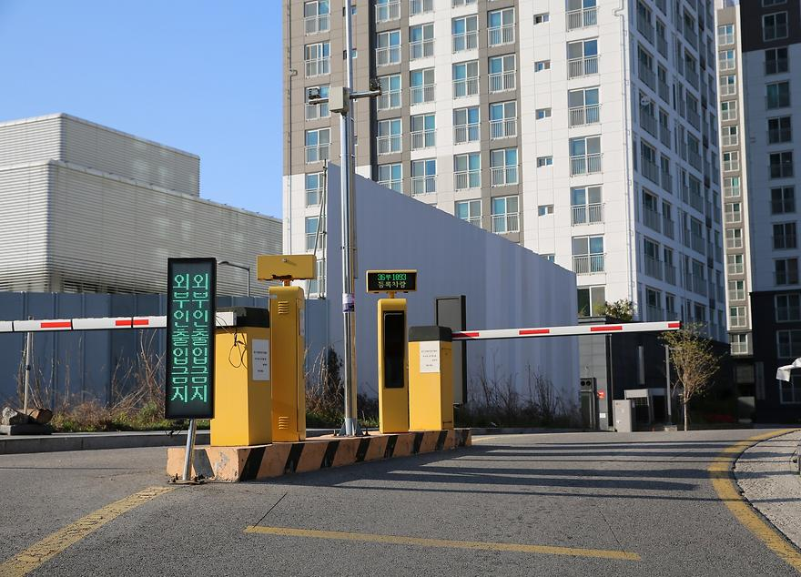
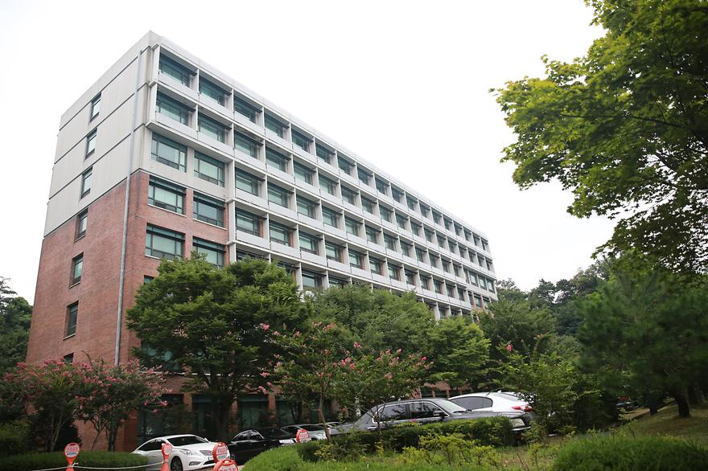

South Korea, Gyeonggi-do, Suwon, Yeongtong-gu, World cup-ro, 206 KR , Suwon , Gyeonggi-do , South
Korea
Đối diện tòa Campus Plaza, Stabucks,...
Đối diện tòa Campus Plaza, Stabucks,...
Gần thư viện, gần trạm kiểm soát giao thông cổng chính
As a symbol of Ajou University, the statue of pioneer expresses today's leadership based on the spirit
of its former ancestors, who expanded the country to the Heuk Ryong River in the past. The torch, in
the hand of the pioneer, embodies the emblem of Ajou University, representing the leader's vision and
passion.
Là biểu tượng của Đại học Ajou, tượng Người Tiên Phong thể hiện sự lãnh đạo ngày nay dựa trên tinh thần của những tổ tiên xưa, họ đã mở rộng lãnh thổ đến sông Heuk Ryong trong quá khứ. Ngọn đuốc trong tay của người tiên phong biểu trưng cho biểu tượng của Đại học Ajou, đại diện cho tầm nhìn và đam mê của người lãnh đạo.
Là biểu tượng của Đại học Ajou, tượng Người Tiên Phong thể hiện sự lãnh đạo ngày nay dựa trên tinh thần của những tổ tiên xưa, họ đã mở rộng lãnh thổ đến sông Heuk Ryong trong quá khứ. Ngọn đuốc trong tay của người tiên phong biểu trưng cho biểu tượng của Đại học Ajou, đại diện cho tầm nhìn và đam mê của người lãnh đạo.
The building was completed in August 1994 and has one basement floor to five floors above the ground.
There are laboratories that deal with various advanced computing facilities.
A center for material characterization, the Institute of Energy Systems and Climate Change and a
semiconductor processing lab are located in the Energy Center
- B1 A center for material characterization
- 1F Photonics-Medical Covergence Technology Research Center, Energy Process Research Laboratory
- 2F Energy modeling Laboratory, Power System Laboratory
- 3F Information Systems Team, Machinery Room
- 4F Joint Equipment Center, NMR Room
- 5F Graduate School-Molecular Science and Technology Department, PC Practice Room
Tòa nhà đã hoàn thành vào tháng 8 năm 1994 và bao gồm một tầng hầm và năm tầng trên mặt đất. Có các phòng thí nghiệm đối thoại với nhiều cơ sở máy tính tiên tiến khác nhau.
Trung tâm mô tả đặc tính vật liệu, Viện Hệ thống Năng lượng và Biến đổi Khí hậu và phòng thí nghiệm xử lý chất bán dẫn được đặt tại Trung tâm Năng lượng.
- Tầng B1: Trung tâm Đặc tính Vật liệu.
- Tầng 1: Trung tâm Nghiên cứu Công nghệ Hợp nhất Photonics-Medical, Phòng Nghiên cứu Quy trình Năng lượng.
- Tầng 2: Phòng thí nghiệm Mô hình Hóa Năng lượng, Phòng thí nghiệm Hệ thống Điện.
- Tầng 3: Nhóm Hệ thống Thông tin, Phòng Máy.
- Tầng 4: Trung tâm Thiết bị Liên kết, Phòng NMR (Hạt nhân từ).
- Tầng 5: Trường Sau đại học - Khoa Học và Công nghệ Phân tử, Phòng Thực hành Máy tính.
- B1 A center for material characterization
- 1F Photonics-Medical Covergence Technology Research Center, Energy Process Research Laboratory
- 2F Energy modeling Laboratory, Power System Laboratory
- 3F Information Systems Team, Machinery Room
- 4F Joint Equipment Center, NMR Room
- 5F Graduate School-Molecular Science and Technology Department, PC Practice Room
Tòa nhà đã hoàn thành vào tháng 8 năm 1994 và bao gồm một tầng hầm và năm tầng trên mặt đất. Có các phòng thí nghiệm đối thoại với nhiều cơ sở máy tính tiên tiến khác nhau.
Trung tâm mô tả đặc tính vật liệu, Viện Hệ thống Năng lượng và Biến đổi Khí hậu và phòng thí nghiệm xử lý chất bán dẫn được đặt tại Trung tâm Năng lượng.
- Tầng B1: Trung tâm Đặc tính Vật liệu.
- Tầng 1: Trung tâm Nghiên cứu Công nghệ Hợp nhất Photonics-Medical, Phòng Nghiên cứu Quy trình Năng lượng.
- Tầng 2: Phòng thí nghiệm Mô hình Hóa Năng lượng, Phòng thí nghiệm Hệ thống Điện.
- Tầng 3: Nhóm Hệ thống Thông tin, Phòng Máy.
- Tầng 4: Trung tâm Thiết bị Liên kết, Phòng NMR (Hạt nhân từ).
- Tầng 5: Trường Sau đại học - Khoa Học và Công nghệ Phân tử, Phòng Thực hành Máy tính.
The building was completed in March 1973, and was the main building of Ajou University in the early
days of its opening. The name of the building comes from Woncheon-dong, where Ajou University is
located. Currently, Electrical and Computer engineering, Physics, Biological sciences, and Chemistry
departments are located in this building.
- 1F Printing Office, Research Laboratory
- 2F College of Natural Science academic office, Professor's office
- 3F-5F Department of Electrical and Computer Engineering Office, Professor's office
Tòa nhà đã hoàn thành vào tháng 3 năm 1973 và là tòa nhà chính của Đại học Ajou trong những ngày đầu khai trương. Tên của tòa nhà được đặt theo tên Woncheon-dong, nơi Đại học Ajou đặt trụ sở. Hiện nay, các Khoa Điện tử và Kỹ thuật Máy tính, Vật lý, Khoa học Sinh học và Hóa học đặt trụ sở tại tòa nhà này.
- Tầng 1: Văn phòng In ấn, Phòng Nghiên cứu.
- Tầng 2: Văn phòng học vụ Khoa Khoa học Tự nhiên, Văn phòng Giáo sư.
- Tầng 3-5: Văn phòng Khoa Điện tử và Kỹ thuật Máy tính, Văn phòng Giáo sư.
- 1F Printing Office, Research Laboratory
- 2F College of Natural Science academic office, Professor's office
- 3F-5F Department of Electrical and Computer Engineering Office, Professor's office
Tòa nhà đã hoàn thành vào tháng 3 năm 1973 và là tòa nhà chính của Đại học Ajou trong những ngày đầu khai trương. Tên của tòa nhà được đặt theo tên Woncheon-dong, nơi Đại học Ajou đặt trụ sở. Hiện nay, các Khoa Điện tử và Kỹ thuật Máy tính, Vật lý, Khoa học Sinh học và Hóa học đặt trụ sở tại tòa nhà này.
- Tầng 1: Văn phòng In ấn, Phòng Nghiên cứu.
- Tầng 2: Văn phòng học vụ Khoa Khoa học Tự nhiên, Văn phòng Giáo sư.
- Tầng 3-5: Văn phòng Khoa Điện tử và Kỹ thuật Máy tính, Văn phòng Giáo sư.
It is a building completed in November 2015 and is home to an academic information room made of 500
million won donated by the Haedong Science and Culture Foundation to build a library dedicated to
science and engineering students
- 1F Center for Entrepreneurship Education
- 2F Academic Information Room, Multimedia Room
- 3F Seminar Room
Đây là một tòa nhà hoàn thành vào tháng 11 năm 2015 và là nơi đặt phòng thông tin học thuật được xây dựng từ 500 triệu won do Quỹ Khoa học và Văn hóa Haedong quyên góp, nhằm xây dựng một thư viện dành riêng cho sinh viên khoa học và kỹ thuật.
- Tầng 1: Trung tâm Đào tạo Doanh nhân
- Tầng 2: Phòng Thông tin Học thuật, Phòng Đa phương tiện
- Tầng 3: Phòng Hội thảo
- 1F Center for Entrepreneurship Education
- 2F Academic Information Room, Multimedia Room
- 3F Seminar Room
Đây là một tòa nhà hoàn thành vào tháng 11 năm 2015 và là nơi đặt phòng thông tin học thuật được xây dựng từ 500 triệu won do Quỹ Khoa học và Văn hóa Haedong quyên góp, nhằm xây dựng một thư viện dành riêng cho sinh viên khoa học và kỹ thuật.
- Tầng 1: Trung tâm Đào tạo Doanh nhân
- Tầng 2: Phòng Thông tin Học thuật, Phòng Đa phương tiện
- Tầng 3: Phòng Hội thảo

It is a building completed in 1982, mainly for Chemical and Chemical engineering experiments. It is a
two-story building with a corporate research institutes and various laboratories.
- 1F Laboratory (Chemistry, Chemical Engineering Department)
- 2F Laboratory (Chemical Engineering, Applied Chemistry & Biological Engineering, Molecular Science and Technology Department)
Đây là một tòa nhà hoàn thành vào năm 1982, chủ yếu được sử dụng cho các thí nghiệm về Hóa học và Kỹ thuật Hóa học. Đây là một tòa nhà hai tầng với các viện nghiên cứu doanh nghiệp và nhiều phòng thí nghiệm khác nhau. - Tầng 1: Phòng Thí nghiệm (Khoa Hóa học, Khoa Kỹ thuật Hóa học) - Tầng 2: Phòng Thí nghiệm (Khoa Kỹ thuật Hóa học, Khoa Hóa học Ứng dụng & Kỹ thuật Sinh học, Khoa Hóa học và Công nghệ Phân tử)
- 1F Laboratory (Chemistry, Chemical Engineering Department)
- 2F Laboratory (Chemical Engineering, Applied Chemistry & Biological Engineering, Molecular Science and Technology Department)
Đây là một tòa nhà hoàn thành vào năm 1982, chủ yếu được sử dụng cho các thí nghiệm về Hóa học và Kỹ thuật Hóa học. Đây là một tòa nhà hai tầng với các viện nghiên cứu doanh nghiệp và nhiều phòng thí nghiệm khác nhau. - Tầng 1: Phòng Thí nghiệm (Khoa Hóa học, Khoa Kỹ thuật Hóa học) - Tầng 2: Phòng Thí nghiệm (Khoa Kỹ thuật Hóa học, Khoa Hóa học Ứng dụng & Kỹ thuật Sinh học, Khoa Hóa học và Công nghệ Phân tử)
The building, which was completed in March 1973, was located at the westernmost part of the campus
when Ajou University was opened. Molecular Science and Technology Research Center and Graduate School
Research Laboratories are located. It is mainly used by Chemical Engineering, Mechanical Engineering
and Environmental and Safety Engineering departments.
- 1F Laboratory (Molecular Science and Technology, Chemical Engineering, Environmental & Safety Engineering, etc.)
- 2F/3F Professor's Office, Laboratory (Molecular Science and Technology, Chemical Engineering, Environmental & Safety Engineering, etc.)
Tòa nhà này, hoàn thành vào tháng 3 năm 1973, nằm ở phía tây cực của khuôn viên khi Đại học Ajou mở cửa. Trong tòa nhà này, bạn sẽ tìm thấy Trung tâm Nghiên cứu Khoa học và Công nghệ Phân tử cùng với Phòng thí nghiệm Nghiên cứu của Trường Sau đại học. Nó chủ yếu được sử dụng bởi các khoa như Kỹ thuật Hóa học, Kỹ thuật Cơ khí và Kỹ thuật Môi trường và An toàn.
- Tầng 1: Phòng thí nghiệm (Khoa Nghiên cứu Khoa học và Công nghệ Phân tử, Khoa Kỹ thuật Hóa học, Khoa Kỹ thuật Môi trường & An toàn, v.v.)
- Tầng 2/3: Phòng làm việc của Giáo sư, Phòng thí nghiệm (Khoa Nghiên cứu Khoa học và Công nghệ Phân tử, Khoa Kỹ thuật Hóa học, Khoa Kỹ thuật Môi trường & An toàn, v.v.)
- 1F Laboratory (Molecular Science and Technology, Chemical Engineering, Environmental & Safety Engineering, etc.)
- 2F/3F Professor's Office, Laboratory (Molecular Science and Technology, Chemical Engineering, Environmental & Safety Engineering, etc.)
Tòa nhà này, hoàn thành vào tháng 3 năm 1973, nằm ở phía tây cực của khuôn viên khi Đại học Ajou mở cửa. Trong tòa nhà này, bạn sẽ tìm thấy Trung tâm Nghiên cứu Khoa học và Công nghệ Phân tử cùng với Phòng thí nghiệm Nghiên cứu của Trường Sau đại học. Nó chủ yếu được sử dụng bởi các khoa như Kỹ thuật Hóa học, Kỹ thuật Cơ khí và Kỹ thuật Môi trường và An toàn.
- Tầng 1: Phòng thí nghiệm (Khoa Nghiên cứu Khoa học và Công nghệ Phân tử, Khoa Kỹ thuật Hóa học, Khoa Kỹ thuật Môi trường & An toàn, v.v.)
- Tầng 2/3: Phòng làm việc của Giáo sư, Phòng thí nghiệm (Khoa Nghiên cứu Khoa học và Công nghệ Phân tử, Khoa Kỹ thuật Hóa học, Khoa Kỹ thuật Môi trường & An toàn, v.v.)
Built in 1974, it is a three-story building used by the Department of Mechanical Engineering. Research
labs such as the Automotive Powertrain System Laboratory, Polymer Processing Laboratory, and the
Intelligent Multi-Scale Design & Processing Laboratory are located.
- 1F Creative Engineering Design Room, Mechanical Diagnosis Preparation Room
- 2F/3F Professor's Office, Research Laboratory (Mechanical Engineering Department)
Được xây dựng vào năm 1974, đây là một tòa nhà ba tầng được sử dụng bởi Khoa Kỹ thuật Cơ khí. Các phòng thí nghiệm nghiên cứu như Phòng thí nghiệm Hệ thống Động cơ Ô tô, Phòng thí nghiệm Xử lý Polymer và Phòng thí nghiệm Thiết kế & Xử lý Đa tầng Thông minh nằm trong tòa nhà này.
- Tầng 1: Phòng Thiết kế Kỹ thuật Sáng tạo, Phòng Chuẩn bị Chẩn đoán Cơ khí
- Tầng 2/3: Phòng làm việc của Giáo sư, Phòng thí nghiệm Nghiên cứu (Khoa Kỹ thuật Cơ khí)
- 1F Creative Engineering Design Room, Mechanical Diagnosis Preparation Room
- 2F/3F Professor's Office, Research Laboratory (Mechanical Engineering Department)
Được xây dựng vào năm 1974, đây là một tòa nhà ba tầng được sử dụng bởi Khoa Kỹ thuật Cơ khí. Các phòng thí nghiệm nghiên cứu như Phòng thí nghiệm Hệ thống Động cơ Ô tô, Phòng thí nghiệm Xử lý Polymer và Phòng thí nghiệm Thiết kế & Xử lý Đa tầng Thông minh nằm trong tòa nhà này.
- Tầng 1: Phòng Thiết kế Kỹ thuật Sáng tạo, Phòng Chuẩn bị Chẩn đoán Cơ khí
- Tầng 2/3: Phòng làm việc của Giáo sư, Phòng thí nghiệm Nghiên cứu (Khoa Kỹ thuật Cơ khí)
It is a container building that was completed in February 2010. There are research laboratories and
facilities mainly used by engineering colleges.
- Research laboratories and facilities
Đó là một tòa nhà container hoàn thành vào tháng 2 năm 2010. Có các phòng thí nghiệm nghiên cứu và cơ sở vật chất chủ yếu được sử dụng bởi các khoa kỹ thuật.
- Phòng thí nghiệm nghiên cứu và cơ sở vật chất
- Research laboratories and facilities
Đó là một tòa nhà container hoàn thành vào tháng 2 năm 2010. Có các phòng thí nghiệm nghiên cứu và cơ sở vật chất chủ yếu được sử dụng bởi các khoa kỹ thuật.
- Phòng thí nghiệm nghiên cứu và cơ sở vật chất
The Geotechnical Engineering Research Building was constructed from seed money formed by 56 graduates
from Division of Environmental, Civil and Transportation Engineering in 2009. The building stretches
over the area of 484.5㎡ composed of laboratories, prevision device laboratory, an experiment
preparation room and a large-scale chamber.
- Research laboratories and facilities
Tòa nhà Nghiên cứu Kỹ thuật Địa kỹ thuật được xây dựng từ nguồn vốn hình thành bởi 56 cựu sinh viên từ Bộ môn Kỹ thuật Môi trường, Dân dụ và Giao thông vào năm 2009. Tòa nhà bao gồm diện tích 484.5㎡ và có các phòng thí nghiệm, phòng thí nghiệm thiết bị dự báo, một phòng chuẩn bị thí nghiệm và một phòng thí nghiệm quy mô lớn.
- Phòng thí nghiệm nghiên cứu và cơ sở vật chất
- Research laboratories and facilities
Tòa nhà Nghiên cứu Kỹ thuật Địa kỹ thuật được xây dựng từ nguồn vốn hình thành bởi 56 cựu sinh viên từ Bộ môn Kỹ thuật Môi trường, Dân dụ và Giao thông vào năm 2009. Tòa nhà bao gồm diện tích 484.5㎡ và có các phòng thí nghiệm, phòng thí nghiệm thiết bị dự báo, một phòng chuẩn bị thí nghiệm và một phòng thí nghiệm quy mô lớn.
- Phòng thí nghiệm nghiên cứu và cơ sở vật chất
It is a container building of College of Engineering Research Institute, where the Future Construction
Creation Center and the Creative Construction Research Institute are located
- Creative Construction Research Institute, Future Construction Creation Center, etc.
Đó là một tòa nhà container thuộc Viện Nghiên cứu Kỹ thuật của Khoa Kỹ thuật, nơi có Trung tâm Sáng tạo Xây dựng Tương lai và Viện Nghiên cứu Xây dựng Sáng tạo.
- Viện Nghiên cứu Xây dựng Sáng tạo, Trung tâm Sáng tạo Xây dựng Tương lai, v.v.
- Creative Construction Research Institute, Future Construction Creation Center, etc.
Đó là một tòa nhà container thuộc Viện Nghiên cứu Kỹ thuật của Khoa Kỹ thuật, nơi có Trung tâm Sáng tạo Xây dựng Tương lai và Viện Nghiên cứu Xây dựng Sáng tạo.
- Viện Nghiên cứu Xây dựng Sáng tạo, Trung tâm Sáng tạo Xây dựng Tương lai, v.v.
The building was completed in December 1993, and its name originated from the name Paldal-gu, Suwon,
where Ajou University is located. It is a 10-story building with a view of Ajou University and Suwon
City. Engineering Education Innovation Center, on-site training center, and Cyber Security Multiplex
Center (CSMC) are located.
- B1 Machinery Room
- 1F Laboratory (Materials Science & Engineering, Molecular Science & Technology), Lecture Room
- 2F College of Engineering Academic Office, Graduate School of Engineering Academic Office
- 3F Software Creation Studio, Software Education Center
- 4F Laboratory (Molecular Science & Technology, Mathematics, etc.), College of Information & Technology Academic Office
- 5F Professor's Office, Graduate School Research Laboratory
- 6F Professor's Office, Laboratory (Mathematics, Computer Engineering, etc.)
- 7F Professor's Office, Laboratory (Material Science & Engineering, Mechanical Engineering, etc.)
- 8F Professor's Office, Laboratory (Industrial Engineering, Molecular Science & Engineering, etc.)
- 9F Professor's Office, Laboratory (Computer Engineering, Space Survey Information Technology, etc.)
- 10F Professor's Office, Laboratory (Transportation System Engineering)
Tòa nhà này đã hoàn thành vào tháng 12 năm 1993, và tên của nó xuất phát từ tên quận Paldal-gu, Suwon, nơi Đại học Ajou đặt trụ sở. Đây là một tòa nhà 10 tầng với tầm nhìn ra Đại học Ajou và Thành phố Suwon. Trong tòa nhà này, có Trung tâm Đổi mới Giáo dục Kỹ thuật, Trung tâm Đào tạo Trực tuyến, và Trung tâm Đa ngành về Bảo mật Mạng (CSMC).
- Tầng B1: Phòng Máy móc
- Tầng 1: Phòng thí nghiệm (Khoa Khoa học và Kỹ thuật Vật liệu, Khoa Nghiên cứu Khoa học và Công nghệ Phân tử), Phòng Giảng dạy
- Tầng 2: Văn phòng Học vụ Khoa Kỹ thuật, Văn phòng Học vụ Sau đại học Kỹ thuật
- Tầng 3: Phòng Sáng tạo Phần mềm, Trung tâm Giáo dục Phần mềm
- Tầng 4: Phòng thí nghiệm (Khoa Nghiên cứu Khoa học và Công nghệ Phân tử, Toán học, v.v.), Văn phòng Học vụ Khoa Công nghệ Thông tin
- Tầng 5: Phòng làm việc của Giáo sư, Phòng thí nghiệm Nghiên cứu Sau đại học
- Tầng 6: Phòng làm việc của Giáo sư, Phòng thí nghiệm (Toán học, Kỹ thuật Máy tính, v.v.)
- Tầng 7: Phòng làm việc của Giáo sư, Phòng thí nghiệm (Khoa Khoa học và Kỹ thuật Vật liệu, Kỹ thuật Cơ khí, v.v.)
- Tầng 8: Phòng làm việc của Giáo sư, Phòng thí nghiệm (Khoa Kỹ thuật Công nghiệp, Khoa Khoa học và Kỹ thuật Vật liệu, v.v.)
- Tầng 9: Phòng làm việc của Giáo sư, Phòng thí nghiệm (Kỹ thuật Máy tính, Công nghệ Thông tin Đo lường Không gian, v.v.)
- Tầng 10: Phòng làm việc của Giáo sư, Phòng thí nghiệm (Kỹ thuật Hệ thống Giao thông)
- B1 Machinery Room
- 1F Laboratory (Materials Science & Engineering, Molecular Science & Technology), Lecture Room
- 2F College of Engineering Academic Office, Graduate School of Engineering Academic Office
- 3F Software Creation Studio, Software Education Center
- 4F Laboratory (Molecular Science & Technology, Mathematics, etc.), College of Information & Technology Academic Office
- 5F Professor's Office, Graduate School Research Laboratory
- 6F Professor's Office, Laboratory (Mathematics, Computer Engineering, etc.)
- 7F Professor's Office, Laboratory (Material Science & Engineering, Mechanical Engineering, etc.)
- 8F Professor's Office, Laboratory (Industrial Engineering, Molecular Science & Engineering, etc.)
- 9F Professor's Office, Laboratory (Computer Engineering, Space Survey Information Technology, etc.)
- 10F Professor's Office, Laboratory (Transportation System Engineering)
Tòa nhà này đã hoàn thành vào tháng 12 năm 1993, và tên của nó xuất phát từ tên quận Paldal-gu, Suwon, nơi Đại học Ajou đặt trụ sở. Đây là một tòa nhà 10 tầng với tầm nhìn ra Đại học Ajou và Thành phố Suwon. Trong tòa nhà này, có Trung tâm Đổi mới Giáo dục Kỹ thuật, Trung tâm Đào tạo Trực tuyến, và Trung tâm Đa ngành về Bảo mật Mạng (CSMC).
- Tầng B1: Phòng Máy móc
- Tầng 1: Phòng thí nghiệm (Khoa Khoa học và Kỹ thuật Vật liệu, Khoa Nghiên cứu Khoa học và Công nghệ Phân tử), Phòng Giảng dạy
- Tầng 2: Văn phòng Học vụ Khoa Kỹ thuật, Văn phòng Học vụ Sau đại học Kỹ thuật
- Tầng 3: Phòng Sáng tạo Phần mềm, Trung tâm Giáo dục Phần mềm
- Tầng 4: Phòng thí nghiệm (Khoa Nghiên cứu Khoa học và Công nghệ Phân tử, Toán học, v.v.), Văn phòng Học vụ Khoa Công nghệ Thông tin
- Tầng 5: Phòng làm việc của Giáo sư, Phòng thí nghiệm Nghiên cứu Sau đại học
- Tầng 6: Phòng làm việc của Giáo sư, Phòng thí nghiệm (Toán học, Kỹ thuật Máy tính, v.v.)
- Tầng 7: Phòng làm việc của Giáo sư, Phòng thí nghiệm (Khoa Khoa học và Kỹ thuật Vật liệu, Kỹ thuật Cơ khí, v.v.)
- Tầng 8: Phòng làm việc của Giáo sư, Phòng thí nghiệm (Khoa Kỹ thuật Công nghiệp, Khoa Khoa học và Kỹ thuật Vật liệu, v.v.)
- Tầng 9: Phòng làm việc của Giáo sư, Phòng thí nghiệm (Kỹ thuật Máy tính, Công nghệ Thông tin Đo lường Không gian, v.v.)
- Tầng 10: Phòng làm việc của Giáo sư, Phòng thí nghiệm (Kỹ thuật Hệ thống Giao thông)
This facility is exclusively used by Reserve Officers' Training Corps candidates. There are computer
rooms, living guidance rooms, training centers, and reserve army regiment rooms.
- B1 Physical fitness center, Office of the autonomous-Governing Council
- 1F Barracks training room, Office of the autonomous-Governing Council
- 2F Brigadier commanders office, Administrative quartermaster office, Training officers room
- 3F audiovisual room
- ROTC sports ground
Cơ sở này chỉ dành riêng cho ứng viên Huấn luyện Sĩ quan Dự bị. Có các phòng máy tính, phòng hướng dẫn sinh hoạt, trung tâm đào tạo và các phòng cho đơn vị quân đội dự bị.
- Tầng B1: Trung tâm thể dục, Văn phòng Hội đồng Tự quản lý
- Tầng 1: Phòng huấn luyện Quân khu, Văn phòng Hội đồng Tự quản lý
- Tầng 2: Văn phòng Tham mưu trưởng, Văn phòng Quản trị quân sự, Phòng sĩ quan đào tạo
- Tầng 3: Phòng đa phương tiện
- Sân thể thao R.O.T.C.
- B1 Physical fitness center, Office of the autonomous-Governing Council
- 1F Barracks training room, Office of the autonomous-Governing Council
- 2F Brigadier commanders office, Administrative quartermaster office, Training officers room
- 3F audiovisual room
- ROTC sports ground
Cơ sở này chỉ dành riêng cho ứng viên Huấn luyện Sĩ quan Dự bị. Có các phòng máy tính, phòng hướng dẫn sinh hoạt, trung tâm đào tạo và các phòng cho đơn vị quân đội dự bị.
- Tầng B1: Trung tâm thể dục, Văn phòng Hội đồng Tự quản lý
- Tầng 1: Phòng huấn luyện Quân khu, Văn phòng Hội đồng Tự quản lý
- Tầng 2: Văn phòng Tham mưu trưởng, Văn phòng Quản trị quân sự, Phòng sĩ quan đào tạo
- Tầng 3: Phòng đa phương tiện
- Sân thể thao R.O.T.C.

It is a container building that was completed in February 2010. There are research laboratories and
facilities mainly used by engineering colleges.
- Research laboratories and facilities
Đó là một tòa nhà container hoàn thành vào tháng 2 năm 2010. Có các phòng thí nghiệm nghiên cứu và cơ sở vật chất chủ yếu được sử dụng bởi các khoa kỹ thuật.
- Phòng thí nghiệm nghiên cứu và cơ sở vật chất
- Research laboratories and facilities
Đó là một tòa nhà container hoàn thành vào tháng 2 năm 2010. Có các phòng thí nghiệm nghiên cứu và cơ sở vật chất chủ yếu được sử dụng bởi các khoa kỹ thuật.
- Phòng thí nghiệm nghiên cứu và cơ sở vật chất
It is a nine-story building that was completed in December 2014. Shared laundry rooms for dormitory
students, fitness rooms, unmanned parcel storage box and meditation rooms are located.
- 1F Gym
- 2F~8F Dormitory
- 9F Faculty Dormitory
Đây là một tòa nhà chín tầng được hoàn thành vào tháng 12 năm 2014. Tòa nhà có các phòng máy giặt chung cho sinh viên ký túc xá, phòng tập thể dục, hộp lưu trữ đồ vô nhân, và phòng thiền.
- Tầng 1: Phòng tập thể dục
- Tầng 2~8: Ký túc xá
- Tầng 9: Ký túc xá cho Giảng viên
- 1F Gym
- 2F~8F Dormitory
- 9F Faculty Dormitory
Đây là một tòa nhà chín tầng được hoàn thành vào tháng 12 năm 2014. Tòa nhà có các phòng máy giặt chung cho sinh viên ký túc xá, phòng tập thể dục, hộp lưu trữ đồ vô nhân, và phòng thiền.
- Tầng 1: Phòng tập thể dục
- Tầng 2~8: Ký túc xá
- Tầng 9: Ký túc xá cho Giảng viên
It is a girls' dormitory, and the name of Gwanggyo Hall is derived from Gwanggyo Jeokseol which is one
of the eight scenery of Suwon
- B1 Coin Laundromat, Fitness room
- 1F~5F Dormitory
Đây là một ký túc xá dành cho nữ sinh, và tên Gwanggyo Hall được lấy từ Gwanggyo Jeokseol, một trong Tám Cảnh đẹp của Suwon.
- Tầng B1: Phòng giặt tự động (coin laundromat), Phòng tập thể dục
- Tầng 1~5: Ký túc xá
- B1 Coin Laundromat, Fitness room
- 1F~5F Dormitory
Đây là một ký túc xá dành cho nữ sinh, và tên Gwanggyo Hall được lấy từ Gwanggyo Jeokseol, một trong Tám Cảnh đẹp của Suwon.
- Tầng B1: Phòng giặt tự động (coin laundromat), Phòng tập thể dục
- Tầng 1~5: Ký túc xá
It is a dormitory for foreign students, and the name Hwahong originated from Hwahonggwanchang, which
is one of the eight scenery of Suwon
- B1 Fitness room, Meditation room
- 1F~5F Dormitory
Đây là một ký túc xá dành cho sinh viên nước ngoài, và tên Hwahong Hall xuất phát từ Hwahonggwanchang, một trong Tám Cảnh đẹp của Suwon.
- Tầng B1: Phòng tập thể dục, Phòng thiền
- Tầng 1~5: Ký túc xá
- B1 Fitness room, Meditation room
- 1F~5F Dormitory
Đây là một ký túc xá dành cho sinh viên nước ngoài, và tên Hwahong Hall xuất phát từ Hwahonggwanchang, một trong Tám Cảnh đẹp của Suwon.
- Tầng B1: Phòng tập thể dục, Phòng thiền
- Tầng 1~5: Ký túc xá
It is a dormitory exclusively for boys, and the name "Yongji" Hall is derived from Yongjidewol.
Dormitories for disabled students and graduate school of law are located.
- 1F~5F Dormitory
Đây là một ký túc xá dành riêng cho nam sinh viên, và tên "Yongji" Hall được lấy từ "Yongjidewol". Trong tòa nhà này, có ký túc xá cho sinh viên khuyết tật và cho học viên sau đại học.
- Tầng 1~5: Ký túc xá
- 1F~5F Dormitory
Đây là một ký túc xá dành riêng cho nam sinh viên, và tên "Yongji" Hall được lấy từ "Yongjidewol". Trong tòa nhà này, có ký túc xá cho sinh viên khuyết tật và cho học viên sau đại học.
- Tầng 1~5: Ký túc xá
It is two story building with one basement floor and is also available to outsiders who visit Ajou
University. Laundromat and laundries are located on the first basement floor, snack bars and dorm
cafeteria on the first floor, and faculty restaurants and dormitory offices on the second floor.
- B1 Laundry, laundromat, coin laundromat for men's dormitories, indoor gym
- 1F Cafeteria, Canteen, Dormitory
- 2F Faculty Restaurants, Dormitory Office
Đây là một tòa nhà hai tầng với một tầng hầm và cũng mở cửa cho người ngoại viếng thăm Đại học Ajou. Phòng giặt và phòng giặt tự động nằm ở tầng hầm 1, các quán ăn nhẹ và căng tin ký túc xá ở tầng 1, và các nhà hàng dành cho giáo viên và văn phòng ký túc xá ở tầng 2.
- Tầng B1: Phòng giặt, phòng giặt tự động, phòng giặt tự động đồng xu dành cho ký túc xá nam, phòng tập thể dục trong nhà
- Tầng 1: Nhà ăn, Quán ăn, Ký túc xá
- Tầng 2: Nhà hàng cho giáo viên, Văn phòng ký túc xá
- B1 Laundry, laundromat, coin laundromat for men's dormitories, indoor gym
- 1F Cafeteria, Canteen, Dormitory
- 2F Faculty Restaurants, Dormitory Office
Đây là một tòa nhà hai tầng với một tầng hầm và cũng mở cửa cho người ngoại viếng thăm Đại học Ajou. Phòng giặt và phòng giặt tự động nằm ở tầng hầm 1, các quán ăn nhẹ và căng tin ký túc xá ở tầng 1, và các nhà hàng dành cho giáo viên và văn phòng ký túc xá ở tầng 2.
- Tầng B1: Phòng giặt, phòng giặt tự động, phòng giặt tự động đồng xu dành cho ký túc xá nam, phòng tập thể dục trong nhà
- Tầng 1: Nhà ăn, Quán ăn, Ký túc xá
- Tầng 2: Nhà hàng cho giáo viên, Văn phòng ký túc xá
It is a four-story dormitory that was completed in March 1976 and expanded in June 1978. Namje Hall
was named after Namjejangryu, which is one of the eight scenery of Suwon
- 1F~4F Dormitory
Namje Hall là một ký túc xá bốn tầng, hoàn thành vào tháng 3 năm 1976 và mở rộng vào tháng 6 năm 1978. Tên Namje Hall xuất phát từ Namjejangryu, một trong Tám Cảnh đẹp của Suwon.
- Tầng 1~4: Ký túc xá
- 1F~4F Dormitory
Namje Hall là một ký túc xá bốn tầng, hoàn thành vào tháng 3 năm 1976 và mở rộng vào tháng 6 năm 1978. Tên Namje Hall xuất phát từ Namjejangryu, một trong Tám Cảnh đẹp của Suwon.
- Tầng 1~4: Ký túc xá
It is a building that has existed since Ajou Institute of Technology. It is a three story building
with restaurants, post offices, banks and club rooms.
- 1F Student Cafeteria, Post office, Bank
- 2F School Club Room
- 3F School Club Room
Đây là một tòa nhà đã tồn tại từ thời Viện Công nghệ Ajou. Đây là một tòa nhà ba tầng với các nhà hàng, bưu điện, ngân hàng và phòng câu lạc bộ.
- Tầng 1: Nhà hàng Sinh viên, Bưu điện, Ngân hàng
- Tầng 2: Phòng câu lạc bộ của trường
- Tầng 3: Phòng câu lạc bộ của trường
- 1F Student Cafeteria, Post office, Bank
- 2F School Club Room
- 3F School Club Room
Đây là một tòa nhà đã tồn tại từ thời Viện Công nghệ Ajou. Đây là một tòa nhà ba tầng với các nhà hàng, bưu điện, ngân hàng và phòng câu lạc bộ.
- Tầng 1: Nhà hàng Sinh viên, Bưu điện, Ngân hàng
- Tầng 2: Phòng câu lạc bộ của trường
- Tầng 3: Phòng câu lạc bộ của trường
This building was completed in July 2007. It is four story building with one basement floor with
Comprehensive Support Center, club rooms, student council rooms, school press rooms, and basic
education university centers.
- B1 Public Practice Room, Club Room
- 1F University Career Development Center, Human Rights Center
- 2F Health Care Center, Club Room
- 3F College Student Council Room, Club Room
- 4F Human Rights Center, Club Room
Tòa nhà này đã hoàn thành vào tháng 7 năm 2007. Đây là một tòa nhà bốn tầng với một tầng hầm, có Trung tâm Hỗ trợ Tổng hợp, các phòng câu lạc bộ, phòng hội sinh viên, phòng báo trường và các trung tâm giáo dục cơ bản.
- Tầng B1: Phòng Thực hành Công cộng, Phòng câu lạc bộ
- Tầng 1: Trung tâm Phát triển Sự nghiệp Đại học, Trung tâm Nhân quyền
- Tầng 2: Trung tâm Chăm sóc Sức khỏe, Phòng câu lạc bộ
- Tầng 3: Phòng Hội sinh viên Khoa, Phòng câu lạc bộ
- Tầng 4: Trung tâm Nhân quyền, Phòng câu lạc bộ
- B1 Public Practice Room, Club Room
- 1F University Career Development Center, Human Rights Center
- 2F Health Care Center, Club Room
- 3F College Student Council Room, Club Room
- 4F Human Rights Center, Club Room
Tòa nhà này đã hoàn thành vào tháng 7 năm 2007. Đây là một tòa nhà bốn tầng với một tầng hầm, có Trung tâm Hỗ trợ Tổng hợp, các phòng câu lạc bộ, phòng hội sinh viên, phòng báo trường và các trung tâm giáo dục cơ bản.
- Tầng B1: Phòng Thực hành Công cộng, Phòng câu lạc bộ
- Tầng 1: Trung tâm Phát triển Sự nghiệp Đại học, Trung tâm Nhân quyền
- Tầng 2: Trung tâm Chăm sóc Sức khỏe, Phòng câu lạc bộ
- Tầng 3: Phòng Hội sinh viên Khoa, Phòng câu lạc bộ
- Tầng 4: Trung tâm Nhân quyền, Phòng câu lạc bộ
It is a building named after the pen name of Seongho Lee Ik, and it was completed in August 1982.
Located in the center of the University, it is mainly used for lecture room for general education
classes.
- 1F Printing Room, Mini Auditorium, PC Room, Cafeteria
- 2F Sungho Bridge, Science Education Institute for the Gifted, and office of data strategy
- 3F Center for Teaching and Learning Development
- 4F Professors Research Laboratory, Dasan University College Academic Office
Đây là một tòa nhà mang tên Bác sĩ Seongho Lee Ik, và đã hoàn thành vào tháng 8 năm 1982. Nằm ở trung tâm của Đại học, tòa nhà này chủ yếu được sử dụng cho phòng giảng dạy các lớp học chung.
- Tầng 1: Phòng In ấn, Hội trường nhỏ, Phòng máy tính, Nhà hàng
- Tầng 2: Cầu Sungho, Viện Giáo dục Khoa học dành cho những học sinh tài năng, và Văn phòng Chiến lược Dữ liệu
- Tầng 3: Trung tâm Phát triển Giáo dục và Học tập
- Tầng 4: Phòng thí nghiệm Nghiên cứu của Giáo sư, Văn phòng Học vụ Đại học Dasan
- 1F Printing Room, Mini Auditorium, PC Room, Cafeteria
- 2F Sungho Bridge, Science Education Institute for the Gifted, and office of data strategy
- 3F Center for Teaching and Learning Development
- 4F Professors Research Laboratory, Dasan University College Academic Office
Đây là một tòa nhà mang tên Bác sĩ Seongho Lee Ik, và đã hoàn thành vào tháng 8 năm 1982. Nằm ở trung tâm của Đại học, tòa nhà này chủ yếu được sử dụng cho phòng giảng dạy các lớp học chung.
- Tầng 1: Phòng In ấn, Hội trường nhỏ, Phòng máy tính, Nhà hàng
- Tầng 2: Cầu Sungho, Viện Giáo dục Khoa học dành cho những học sinh tài năng, và Văn phòng Chiến lược Dữ liệu
- Tầng 3: Trung tâm Phát triển Giáo dục và Học tập
- Tầng 4: Phòng thí nghiệm Nghiên cứu của Giáo sư, Văn phòng Học vụ Đại học Dasan
Located bewteen Seongho Hall and Centeral library, The Terrace is a place where students can relax and
take a break. During festival season, this is used for student club or festival exhibition venue.
Nằm giữa Seongho Hall và Thư viện Trung tâm, The Terrace là một không gian nơi sinh viên có thể thư giãn và nghỉ ngơi. Trong mùa lễ hội, nơi này thường được sử dụng làm địa điểm triển lãm của các câu lạc bộ sinh viên hoặc lễ hội.
Nằm giữa Seongho Hall và Thư viện Trung tâm, The Terrace là một không gian nơi sinh viên có thể thư giãn và nghỉ ngơi. Trong mùa lễ hội, nơi này thường được sử dụng làm địa điểm triển lãm của các câu lạc bộ sinh viên hoặc lễ hội.
The Central Library of Ajou University was established with a donation (about 5 billion won)by
Chairman Kim Woo-joong to commemorate the 10th anniversary of Ajou university's opening. It has
completed the remodeling of facility in 2017 and newly opened a Book Cafe on the first floor and a
community lounge on the second floor, boasting the same atmosphere as a premium study cafe.
It has a large collection of materials and also opens on Sundays. It is also open to the public with an issuance of a liabrary card.
- B1 Archive
- B2 Warehouse
- 1F 027 Lounge, Multimedia Information Room, Mini Auditorium
- 2F Academic Discussion Room, Periodical Room
- 3F Language and Natural Science Library
- 4F Communication Room, Academic Discussion Room
Thư viện Trung tâm của Đại học Ajou được thành lập nhờ một đóng góp (khoảng 5 tỷ won) từ Chủ tịch Kim Woo-joong để kỷ niệm 10 năm ngày khai trương của Đại học Ajou. Thư viện đã hoàn tất việc nâng cấp cơ sở vật chất vào năm 2017 và mở một Quán Cà phê Sách ở tầng 1 cùng với một phòng chờ cộng đồng ở tầng 2, với không khí giống như một quán học tốt cao cấp.
Thư viện này có một bộ sưu tập lớn về tư liệu và cũng mở cửa vào các ngày Chủ Nhật. Nó cũng mở cửa cho công dân với việc cấp thẻ thư viện.
- Tầng B1: Khu Lưu trữ
- Tầng B2: Khu Kho
- Tầng 1: Phòng Nghỉ 027, Phòng Thông tin Đa phương tiện, Hội trường nhỏ
- Tầng 2: Phòng Thảo luận Học thuật, Phòng Tạp chí
- Tầng 3: Thư viện Ngôn ngữ và Khoa học Tự nhiên
- Tầng 4: Phòng Giao tiếp, Phòng Thảo luận Học thuật
It has a large collection of materials and also opens on Sundays. It is also open to the public with an issuance of a liabrary card.
- B1 Archive
- B2 Warehouse
- 1F 027 Lounge, Multimedia Information Room, Mini Auditorium
- 2F Academic Discussion Room, Periodical Room
- 3F Language and Natural Science Library
- 4F Communication Room, Academic Discussion Room
Thư viện Trung tâm của Đại học Ajou được thành lập nhờ một đóng góp (khoảng 5 tỷ won) từ Chủ tịch Kim Woo-joong để kỷ niệm 10 năm ngày khai trương của Đại học Ajou. Thư viện đã hoàn tất việc nâng cấp cơ sở vật chất vào năm 2017 và mở một Quán Cà phê Sách ở tầng 1 cùng với một phòng chờ cộng đồng ở tầng 2, với không khí giống như một quán học tốt cao cấp.
Thư viện này có một bộ sưu tập lớn về tư liệu và cũng mở cửa vào các ngày Chủ Nhật. Nó cũng mở cửa cho công dân với việc cấp thẻ thư viện.
- Tầng B1: Khu Lưu trữ
- Tầng B2: Khu Kho
- Tầng 1: Phòng Nghỉ 027, Phòng Thông tin Đa phương tiện, Hội trường nhỏ
- Tầng 2: Phòng Thảo luận Học thuật, Phòng Tạp chí
- Tầng 3: Thư viện Ngôn ngữ và Khoa học Tự nhiên
- Tầng 4: Phòng Giao tiếp, Phòng Thảo luận Học thuật
It is a festival performance stage of Ajou University. It can officially accommodate about 3,500
people, and this is where the main school events are held. The speech ceremony of the first President
of Ajou University and a Vision proclamation ceremony were also held at the Amphitheater.
"Amphitheater" ở Đại học Ajou là một sân khấu biểu diễn dành cho các sự kiện lễ hội. Nó có thể chính thức chứa khoảng 3.500 người, và đây là nơi diễn ra các sự kiện chính của trường. Lễ phát biểu của Chủ tịch đầu tiên của Đại học Ajou và Lễ tuyên bố Tầm nhìn cũng đã được tổ chức tại Amphitheater.
"Amphitheater" ở Đại học Ajou là một sân khấu biểu diễn dành cho các sự kiện lễ hội. Nó có thể chính thức chứa khoảng 3.500 người, và đây là nơi diễn ra các sự kiện chính của trường. Lễ phát biểu của Chủ tịch đầu tiên của Đại học Ajou và Lễ tuyên bố Tầm nhìn cũng đã được tổ chức tại Amphitheater.
Yulgok Hall, the main building of Ajou University, originated its name from Korean scholar Yulgok
Yiyi. It is a five story buidling with one basement floor. The main administrative offices are located
such as the President's Office, Office of Admissions, Office of Education, College of Social Sciences
and Division of International Studies.
- B1 Innovation Hub Lounge
- 1F Grand Auditorium, PC Room, Office of Admissions, Office of Education, Office of International Affairs
- 2F Corporate Secretariat, Office of the Board Chairman, President's Office, Office of Public Relations
- 3F Administrative Offices, College of Social Science Academic Office, Division of International Studies Office
- 4F Professor's office, Social Sciences Research Institute
- 5F Professor's office, The Chinese Policy Research Institute
"Yulgok Hall," tòa nhà chính của Đại học Ajou, có nguồn gốc tên từ học giả Hàn Quốc Yulgok Yiyi. Đây là một tòa nhà năm tầng với một tầng hầm. Các văn phòng hành chính chính của trường đặt tại đây, bao gồm Văn phòng Chủ tịch, Văn phòng Tuyển sinh, Văn phòng Giáo dục, Khoa Xã hội học và Bộ môn Nghiên cứu Quốc tế.
- Tầng B1: Khu vực Nghỉ ngơi Innovation Hub
- Tầng 1: Hội trường lớn, Phòng máy tính, Văn phòng Tuyển sinh, Văn phòng Giáo dục, Văn phòng Quan hệ Quốc tế
- Tầng 2: Văn phòng Bí thư Công ty, Văn phòng Chủ tịch Hội đồng, Văn phòng Chủ tịch, Văn phòng Quan hệ Công chúng
- Tầng 3: Các Văn phòng Hành chính, Văn phòng Học vụ Khoa Xã hội, Văn phòng Bộ môn Nghiên cứu Quốc tế
- Tầng 4: Văn phòng Giáo sư, Viện Nghiên cứu Khoa học Xã hội
- Tầng 5: Văn phòng Giáo sư, Viện Nghiên cứu Chính sách Trung Quốc
- B1 Innovation Hub Lounge
- 1F Grand Auditorium, PC Room, Office of Admissions, Office of Education, Office of International Affairs
- 2F Corporate Secretariat, Office of the Board Chairman, President's Office, Office of Public Relations
- 3F Administrative Offices, College of Social Science Academic Office, Division of International Studies Office
- 4F Professor's office, Social Sciences Research Institute
- 5F Professor's office, The Chinese Policy Research Institute
"Yulgok Hall," tòa nhà chính của Đại học Ajou, có nguồn gốc tên từ học giả Hàn Quốc Yulgok Yiyi. Đây là một tòa nhà năm tầng với một tầng hầm. Các văn phòng hành chính chính của trường đặt tại đây, bao gồm Văn phòng Chủ tịch, Văn phòng Tuyển sinh, Văn phòng Giáo dục, Khoa Xã hội học và Bộ môn Nghiên cứu Quốc tế.
- Tầng B1: Khu vực Nghỉ ngơi Innovation Hub
- Tầng 1: Hội trường lớn, Phòng máy tính, Văn phòng Tuyển sinh, Văn phòng Giáo dục, Văn phòng Quan hệ Quốc tế
- Tầng 2: Văn phòng Bí thư Công ty, Văn phòng Chủ tịch Hội đồng, Văn phòng Chủ tịch, Văn phòng Quan hệ Công chúng
- Tầng 3: Các Văn phòng Hành chính, Văn phòng Học vụ Khoa Xã hội, Văn phòng Bộ môn Nghiên cứu Quốc tế
- Tầng 4: Văn phòng Giáo sư, Viện Nghiên cứu Khoa học Xã hội
- Tầng 5: Văn phòng Giáo sư, Viện Nghiên cứu Chính sách Trung Quốc
Dasan Hall was completed in August 1995, and the name 'Dasan' was derived from the pen name of Jeong
Yak-yong. The building is shaped like a character 'ㅁ' in hangul with an empty square in the middle
decorated with courtyard garden . From 1st to 3rd level, the buiding is used as lecture rooms, and an
auditorium and lecture halls called Ahn Jung-hwan hall (facmous soccer player and Ajou grdauate) in
the basement.
- B1 AMON Studio, Grand Auditorium, Counseling Room
- 1F Cafeteria, Canteen, Lecture Room
- 2F Professors office, Humanities College academic office, Projet de formation des experts en francophonie
- 3F Professors office, School of Business academic office, PC Room for department of Business Administration
- 4F Professor's office, WCU Trading Room, Financial Engineering PC Room, Digital History Laboratory
- 5F Professor's office
Dasan Hall đã hoàn thành vào tháng 8 năm 1995, và tên 'Dasan' được lấy từ bút danh của Jeong Yak-yong. Tòa nhà có hình dạng giống như ký tự 'ㅁ' trong hangul với một hình vuông trống ở giữa được trang trí bằng khu vườn nội thất. Từ tầng 1 đến tầng 3, tòa nhà được sử dụng làm phòng giảng, và có một hội trường và các hội trường giảng dạy được gọi là Ahn Jung-hwan Hall (cầu thủ bóng đá nổi tiếng và cựu sinh viên Ajou) ở tầng hầm.
- Tầng B1: Phòng Studio AMON, Hội trường lớn, Phòng Tư vấn
- Tầng 1: Nhà hàng, Quán ăn, Phòng giảng
- Tầng 2: Văn phòng Giáo sư, Văn phòng Học vụ Khoa Nhân văn, Dự án đào tạo chuyên gia tiếng Pháp
- Tầng 3: Văn phòng Giáo sư, Văn phòng Học vụ Khoa Kinh doanh, Phòng máy tính cho Khoa Quản trị Kinh doanh
- Tầng 4: Văn phòng Giáo sư, Phòng Giao dịch WCU, Phòng máy tính Kỹ thuật Tài chính, Phòng thí nghiệm Lịch sử số
- Tầng 5: Văn phòng Giáo sư
- B1 AMON Studio, Grand Auditorium, Counseling Room
- 1F Cafeteria, Canteen, Lecture Room
- 2F Professors office, Humanities College academic office, Projet de formation des experts en francophonie
- 3F Professors office, School of Business academic office, PC Room for department of Business Administration
- 4F Professor's office, WCU Trading Room, Financial Engineering PC Room, Digital History Laboratory
- 5F Professor's office
Dasan Hall đã hoàn thành vào tháng 8 năm 1995, và tên 'Dasan' được lấy từ bút danh của Jeong Yak-yong. Tòa nhà có hình dạng giống như ký tự 'ㅁ' trong hangul với một hình vuông trống ở giữa được trang trí bằng khu vườn nội thất. Từ tầng 1 đến tầng 3, tòa nhà được sử dụng làm phòng giảng, và có một hội trường và các hội trường giảng dạy được gọi là Ahn Jung-hwan Hall (cầu thủ bóng đá nổi tiếng và cựu sinh viên Ajou) ở tầng hầm.
- Tầng B1: Phòng Studio AMON, Hội trường lớn, Phòng Tư vấn
- Tầng 1: Nhà hàng, Quán ăn, Phòng giảng
- Tầng 2: Văn phòng Giáo sư, Văn phòng Học vụ Khoa Nhân văn, Dự án đào tạo chuyên gia tiếng Pháp
- Tầng 3: Văn phòng Giáo sư, Văn phòng Học vụ Khoa Kinh doanh, Phòng máy tính cho Khoa Quản trị Kinh doanh
- Tầng 4: Văn phòng Giáo sư, Phòng Giao dịch WCU, Phòng máy tính Kỹ thuật Tài chính, Phòng thí nghiệm Lịch sử số
- Tầng 5: Văn phòng Giáo sư
College of Pharmacy is a three-story building with one basement floor and was completed in February
2012. There are lecture rooms, laboratories, faculty office, animal care and operating rooms and etc.
Although the building was completed in 2012, it has similar features of Dasan hall which was built 20
years ago.
- B1F Pharmacy Practice Room, Brain Activity Zone
- 1F Practice Pharmacy, LINC Freethinking Zone
- 2F Professor's Office, Specialized Laboratory
- 3F Professor's Office, Animal Laboratory, Drug Analysis Laboratory
Khoa Dược học là một tòa nhà ba tầng với một tầng hầm và đã hoàn thành vào tháng 2 năm 2012. Tòa nhà này bao gồm các phòng giảng, phòng thí nghiệm, văn phòng giáo viên, phòng chăm sóc động vật và phòng mổ, và nhiều tiện ích khác. Mặc dù tòa nhà được hoàn thành vào năm 2012, nhưng nó có các đặc điểm tương tự với Dasan Hall, được xây dựng cách đây 20 năm.
- Tầng B1: Phòng Thực hành Dược học, Khu Vận động Não
- Tầng 1: Phòng Thực hành Dược học, Khu Tư duy LINC
- Tầng 2: Văn phòng Giáo sư, Phòng thí nghiệm Chuyên sâu
- Tầng 3: Văn phòng Giáo sư, Phòng thí nghiệm Động vật, Phòng thí nghiệm Phân tích Dược phẩm
- B1F Pharmacy Practice Room, Brain Activity Zone
- 1F Practice Pharmacy, LINC Freethinking Zone
- 2F Professor's Office, Specialized Laboratory
- 3F Professor's Office, Animal Laboratory, Drug Analysis Laboratory
Khoa Dược học là một tòa nhà ba tầng với một tầng hầm và đã hoàn thành vào tháng 2 năm 2012. Tòa nhà này bao gồm các phòng giảng, phòng thí nghiệm, văn phòng giáo viên, phòng chăm sóc động vật và phòng mổ, và nhiều tiện ích khác. Mặc dù tòa nhà được hoàn thành vào năm 2012, nhưng nó có các đặc điểm tương tự với Dasan Hall, được xây dựng cách đây 20 năm.
- Tầng B1: Phòng Thực hành Dược học, Khu Vận động Não
- Tầng 1: Phòng Thực hành Dược học, Khu Tư duy LINC
- Tầng 2: Văn phòng Giáo sư, Phòng thí nghiệm Chuyên sâu
- Tầng 3: Văn phòng Giáo sư, Phòng thí nghiệm Động vật, Phòng thí nghiệm Phân tích Dược phẩm
This building (also known as ACE center) is a five-story building, with one basement floor and its
size is about 4,268.39 square meters. It is equipped with a clinical skills laboratory where medical
students can be educated on clinical skills and attitudes essential for patient care and an
experimental animal research center for ethical animal experimentation
On the first and second floors, there are faculty offices, lecture rooms and seminar rooms for
comprehensive clinical practice, while on the third and fourth floors, laboratories, breeding rooms
and autopsy rooms for more effective and ethical animal experimentation are located. The Infectious
animal laboratories on the fourth floor allow animal infection tests that have not been done before,
which will greatly help future research and education.
- B1 Nursing University Student Council Room, etc.
- 1F Student Education Room, Standardized Patient Education Room, etc.
- 2F Nursing University Professor's Office, Lecture Room, etc.
- 3F/4F Experimental Animal Research Center
Tòa nhà này (còn được biết đến với tên gọi là Trung tâm ACE) là một tòa nhà năm tầng, có một tầng hầm và có diện tích khoảng 4.268,39 mét vuông. Nó được trang bị một phòng thực hành kỹ năng lâm sàng nơi sinh viên y học có thể được đào tạo về các kỹ năng lâm sàng và thái độ cần thiết cho việc chăm sóc bệnh nhân, cũng như một trung tâm nghiên cứu động vật thử nghiệm để thực hiện thí nghiệm động vật một cách đạo đức.
Ở tầng một và tầng hai, có văn phòng giáo viên, phòng giảng và phòng hội thảo cho việc thực hành lâm sàng toàn diện, trong khi ở tầng ba và tầng bốn, có các phòng thí nghiệm, phòng nuôi dưỡng và phòng tử thi để thực hiện thí nghiệm động vật một cách hiệu quả và đạo đức hơn. Các phòng thí nghiệm động vật nhiễm trùng ở tầng bốn cho phép các thử nghiệm nhiễm trùng động vật mà trước đây chưa được thực hiện, điều này sẽ hỗ trợ lớn cho nghiên cứu và giáo dục trong tương lai.
- Tầng B1: Phòng Hội đồng Sinh viên Đại học Y, v.v.
- Tầng 1: Phòng Giáo dục Sinh viên, Phòng Giáo dục Bệnh nhân Tiêu chuẩn, v.v.
- Tầng 2: Văn phòng Giáo sư Đại học Y, Phòng Giảng, v.v.
- Tầng 3/4: Trung tâm Nghiên cứu Động vật Thử nghiệm
- B1 Nursing University Student Council Room, etc.
- 1F Student Education Room, Standardized Patient Education Room, etc.
- 2F Nursing University Professor's Office, Lecture Room, etc.
- 3F/4F Experimental Animal Research Center
Tòa nhà này (còn được biết đến với tên gọi là Trung tâm ACE) là một tòa nhà năm tầng, có một tầng hầm và có diện tích khoảng 4.268,39 mét vuông. Nó được trang bị một phòng thực hành kỹ năng lâm sàng nơi sinh viên y học có thể được đào tạo về các kỹ năng lâm sàng và thái độ cần thiết cho việc chăm sóc bệnh nhân, cũng như một trung tâm nghiên cứu động vật thử nghiệm để thực hiện thí nghiệm động vật một cách đạo đức.
Ở tầng một và tầng hai, có văn phòng giáo viên, phòng giảng và phòng hội thảo cho việc thực hành lâm sàng toàn diện, trong khi ở tầng ba và tầng bốn, có các phòng thí nghiệm, phòng nuôi dưỡng và phòng tử thi để thực hiện thí nghiệm động vật một cách hiệu quả và đạo đức hơn. Các phòng thí nghiệm động vật nhiễm trùng ở tầng bốn cho phép các thử nghiệm nhiễm trùng động vật mà trước đây chưa được thực hiện, điều này sẽ hỗ trợ lớn cho nghiên cứu và giáo dục trong tương lai.
- Tầng B1: Phòng Hội đồng Sinh viên Đại học Y, v.v.
- Tầng 1: Phòng Giáo dục Sinh viên, Phòng Giáo dục Bệnh nhân Tiêu chuẩn, v.v.
- Tầng 2: Văn phòng Giáo sư Đại học Y, Phòng Giảng, v.v.
- Tầng 3/4: Trung tâm Nghiên cứu Động vật Thử nghiệm
Yeonam hall is a 12-story building with two basement floors. There are law school, and special
graduate schools such as the Graduate School of Education, the Graduate School of Information and
Communication and the Graduate School of Public Affairs.
In addition, 'Tool museum' and 'Ajou Hisotry exhibition space' are located on the first floor. The law
school library, a seminar room, and a computer labs are located on the second floor. 'Cornerstone', a
fancy restaurant equipped with a sky lounge view, is located on the 12th floor where school events and
gatherings are held.
- B2/B1 Underground Parking Lot
- 1F Grand Auditorium, Tool Museum, Ajou History Exhibition Hall, Canteen
- 2F Law School Library, Information Retrieval Room, 24-hour study room
- 3F Law Institute, School of Law Academic Office, 24-hour reading room
- 4F Professor's Office
- 5F Professor's Office, Student Guidance Center, and Mock Court Room
- 6F Professor's Offce, Simulated Court Room
- 7F Professor's Office, Graduate School of Education Academic office, Multimedia Production Room
- 8F Professor's Office, Teacher Appointment Examination Class, Class Preparatory Room
- 9F Professor's Office, Graduate School of Information and Communication Technology Academic Office
- 10F Professor's Office, Graduate School of public Affairs
- 11F LINC Project Team, Industrial-Academic Support Team, Institutional Bioethics Committee
- 12F Cornerstone Restaurant, Rooftop Garden
Yeonam Hall là một tòa nhà 12 tầng với hai tầng hầm. Tòa nhà này chủ yếu chứa Khoa Luật và các trường sau đại học đặc biệt như Trường Sau đại học Giáo dục, Trường Sau đại học Thông tin và Truyền thông, và Trường Sau đại học Quản lý Công cộng.
Ngoài ra, tầng 1 có 'Bảo tàng Dụng cụ' và 'Khu triển lãm Lịch sử Ajou'. Tại tầng 2, có Thư viện Khoa Luật, phòng hội thảo và phòng máy tính. Tầng 12 có nhà hàng 'Cornerstone', được trang bị tầm nhìn từ sảnh trời, nơi tổ chức sự kiện và tụ tập.
- Tầng B2/B1: Bãi đỗ xe ngầm
- Tầng 1: Hội trường lớn, Bảo tàng Dụng cụ, Phòng Triển lãm Lịch sử Ajou, Quán ăn
- Tầng 2: Thư viện Khoa Luật, Phòng Tra cứu Thông tin, Phòng học 24 giờ
- Tầng 3: Viện Luật, Văn phòng Học vụ Khoa Luật, Phòng đọc 24 giờ
- Tầng 4-11: Văn phòng Giáo sư và các phòng chức năng khác
- Tầng 12: Nhà hàng Cornerstone, Khu vườn sân thượng
- B2/B1 Underground Parking Lot
- 1F Grand Auditorium, Tool Museum, Ajou History Exhibition Hall, Canteen
- 2F Law School Library, Information Retrieval Room, 24-hour study room
- 3F Law Institute, School of Law Academic Office, 24-hour reading room
- 4F Professor's Office
- 5F Professor's Office, Student Guidance Center, and Mock Court Room
- 6F Professor's Offce, Simulated Court Room
- 7F Professor's Office, Graduate School of Education Academic office, Multimedia Production Room
- 8F Professor's Office, Teacher Appointment Examination Class, Class Preparatory Room
- 9F Professor's Office, Graduate School of Information and Communication Technology Academic Office
- 10F Professor's Office, Graduate School of public Affairs
- 11F LINC Project Team, Industrial-Academic Support Team, Institutional Bioethics Committee
- 12F Cornerstone Restaurant, Rooftop Garden
Yeonam Hall là một tòa nhà 12 tầng với hai tầng hầm. Tòa nhà này chủ yếu chứa Khoa Luật và các trường sau đại học đặc biệt như Trường Sau đại học Giáo dục, Trường Sau đại học Thông tin và Truyền thông, và Trường Sau đại học Quản lý Công cộng.
Ngoài ra, tầng 1 có 'Bảo tàng Dụng cụ' và 'Khu triển lãm Lịch sử Ajou'. Tại tầng 2, có Thư viện Khoa Luật, phòng hội thảo và phòng máy tính. Tầng 12 có nhà hàng 'Cornerstone', được trang bị tầm nhìn từ sảnh trời, nơi tổ chức sự kiện và tụ tập.
- Tầng B2/B1: Bãi đỗ xe ngầm
- Tầng 1: Hội trường lớn, Bảo tàng Dụng cụ, Phòng Triển lãm Lịch sử Ajou, Quán ăn
- Tầng 2: Thư viện Khoa Luật, Phòng Tra cứu Thông tin, Phòng học 24 giờ
- Tầng 3: Viện Luật, Văn phòng Học vụ Khoa Luật, Phòng đọc 24 giờ
- Tầng 4-11: Văn phòng Giáo sư và các phòng chức năng khác
- Tầng 12: Nhà hàng Cornerstone, Khu vườn sân thượng
It is a laboratory of Graduate School Department of Biomedical Sciences. There are laboratory-1 and
microscope room on the first floor and laboratory-2 and cell treatment center on the second floor. On
the third floor, there is a center for Clinical Epidemiology
- 1F Laboratory 1, Microscope Room, etc.
- 2F Laboratory 2, Cell Treatment Center, etc.
- 3F Clinical epidemiology Center, Nursing University Lecture Room, etc.
Đây là phòng thí nghiệm thuộc Khoa Nghiên cứu Sau đại học về Khoa Học Y Sinh. Tòa nhà này bao gồm Phòng thí nghiệm 1 và Phòng kính hiển vi ở tầng 1, Phòng thí nghiệm 2 và Trung tâm Điều trị tế bào ở tầng 2. Ở tầng 3, có Trung tâm Dựa trên Đối số Lâm sàng.
- Tầng 1: Phòng Thí nghiệm 1, Phòng Kính hiển vi, v.v.
- Tầng 2: Phòng Thí nghiệm 2, Trung tâm Điều trị Tế bào, v.v.
- Tầng 3: Trung tâm Dựa trên Đối số Lâm sàng, Phòng Giảng Đại học Y, v.v.
- 1F Laboratory 1, Microscope Room, etc.
- 2F Laboratory 2, Cell Treatment Center, etc.
- 3F Clinical epidemiology Center, Nursing University Lecture Room, etc.
Đây là phòng thí nghiệm thuộc Khoa Nghiên cứu Sau đại học về Khoa Học Y Sinh. Tòa nhà này bao gồm Phòng thí nghiệm 1 và Phòng kính hiển vi ở tầng 1, Phòng thí nghiệm 2 và Trung tâm Điều trị tế bào ở tầng 2. Ở tầng 3, có Trung tâm Dựa trên Đối số Lâm sàng.
- Tầng 1: Phòng Thí nghiệm 1, Phòng Kính hiển vi, v.v.
- Tầng 2: Phòng Thí nghiệm 2, Trung tâm Điều trị Tế bào, v.v.
- Tầng 3: Trung tâm Dựa trên Đối số Lâm sàng, Phòng Giảng Đại học Y, v.v.
A steel-framed parking garage located next to a gym.
Một bãi đỗ xe kết cấu bằng thép nằm kế bên một phòng tập gym.
Một bãi đỗ xe kết cấu bằng thép nằm kế bên một phòng tập gym.
The gymnasium is a two story building with one basement and the building was completed in June 1999.
School events such as entrance ceremonies, graduation ceremoniesare held, and the gym is also used for
exhibition fairs and conferences by companies.
- B1 squash room, waiting room
- 1F Shower Room, Athlete's Waiting Room, Protocol Room, Management Room, PC119 Center
- 2F Stadium seats, gym, aerobics, taekwondo, tennis practice room
Phòng tập thể dục là một tòa nhà hai tầng với một tầng hầm và đã hoàn thành vào tháng 6 năm 1999. Các sự kiện trường như lễ nhập học, lễ tốt nghiệp được tổ chức, và phòng tập thể dục cũng được sử dụng cho các triển lãm và hội nghị của các công ty.
- Tầng B1: Phòng squash, Phòng chờ
- Tầng 1: Phòng tắm, Phòng chờ vận động viên, Phòng Giao thức, Phòng Quản lý, Trung tâm PC119
- Tầng 2: Ghế nhà thi đấu, Phòng tập thể dục, Aerobics, Taekwondo, Phòng tập tennis
- B1 squash room, waiting room
- 1F Shower Room, Athlete's Waiting Room, Protocol Room, Management Room, PC119 Center
- 2F Stadium seats, gym, aerobics, taekwondo, tennis practice room
Phòng tập thể dục là một tòa nhà hai tầng với một tầng hầm và đã hoàn thành vào tháng 6 năm 1999. Các sự kiện trường như lễ nhập học, lễ tốt nghiệp được tổ chức, và phòng tập thể dục cũng được sử dụng cho các triển lãm và hội nghị của các công ty.
- Tầng B1: Phòng squash, Phòng chờ
- Tầng 1: Phòng tắm, Phòng chờ vận động viên, Phòng Giao thức, Phòng Quản lý, Trung tâm PC119
- Tầng 2: Ghế nhà thi đấu, Phòng tập thể dục, Aerobics, Taekwondo, Phòng tập tennis
The sections are divided into general athletic fields and soccer fields. In the case of an athletic
ground, a track is built around the ground, which is used for students and nearby residents to
exercise. Soccer fields are used for soccer team practice or college football league games. By using a
reservation system, everyone in the community can use the soccer field.
Các khu vực được chia thành sân thể thao tổng quát và sân bóng đá. Trong trường hợp của sân thể thao, có một đường chạy xung quanh sân, được sử dụng cho sinh viên và cư dân xung quanh để tập luyện. Sân bóng đá được sử dụng cho tập luyện đội bóng đá hoặc các trận đấu trong liên đội bóng đá đại học. Bằng cách sử dụng hệ thống đặt chỗ, mọi người trong cộng đồng có thể sử dụng sân bóng đá.
Các khu vực được chia thành sân thể thao tổng quát và sân bóng đá. Trong trường hợp của sân thể thao, có một đường chạy xung quanh sân, được sử dụng cho sinh viên và cư dân xung quanh để tập luyện. Sân bóng đá được sử dụng cho tập luyện đội bóng đá hoặc các trận đấu trong liên đội bóng đá đại học. Bằng cách sử dụng hệ thống đặt chỗ, mọi người trong cộng đồng có thể sử dụng sân bóng đá.
It is a nine-story building and a corporate support center and a creative factory are located. Various
equipment such as 3D printers and laser cutters are available at the creative factory, and the
equipment are used for start-ups or engineering projects.
- B1~B3 parking lot
- 1F Archive, Open Office Space
- 2F Lecture Room, Break Room
- 3F Startup Club Room, Professional Lab
- 4F Entrepreneurship and Child Care Center
- 5F Ajou Psychological Counseling Center, LINC Startup Support Club
- 6F Corporate Support Center, Institute of Advanced Technology
- 7F Ajou Institute of Unification, Institute for World Studies
- 8F Power Electronics Laboratory
- 8MF Smart Manufacturing Service Convergence Experiment and Convergence Design Training Laboratory, Ubiquitous Convergence Laboratory
Đây là một tòa nhà chín tầng, trong đó có một trung tâm hỗ trợ doanh nghiệp và một nhà máy sáng tạo. Các trang thiết bị đa dạng như máy in 3D và máy cắt laser có sẵn tại nhà máy sáng tạo, và các thiết bị này được sử dụng cho các doanh nghiệp mới hoặc dự án kỹ thuật.
- Tầng B1 đến B3: Bãi đỗ xe
- Tầng 1: Lưu trữ, Không gian Văn phòng Mở
- Tầng 2: Phòng Giảng, Phòng Nghỉ
- Tầng 3: Phòng Hội viên Câu lạc bộ Khởi nghiệp, Phòng Lab Chuyên nghiệp
- Tầng 4: Trung tâm Khởi nghiệp và Trung tâm Chăm sóc Trẻ em
- Tầng 5: Trung tâm Tư vấn Tâm lý Ajou, Câu lạc bộ Hỗ trợ Khởi nghiệp LINC
- Tầng 6: Trung tâm Hỗ trợ Doanh nghiệp, Viện Công nghệ Nâng cao
- Tầng 7: Viện Thống nhất Ajou, Viện Nghiên cứu Thế giới
- Tầng 8: Phòng Thí nghiệm Điện tử Công suất
- Tầng 8MF: Phòng Thí nghiệm Huấn luyện và Thí nghiệm Thiết kế Hội nhập Dịch vụ Sản xuất Thông minh, Phòng thí nghiệm Hội nhập Khắp nơi
- B1~B3 parking lot
- 1F Archive, Open Office Space
- 2F Lecture Room, Break Room
- 3F Startup Club Room, Professional Lab
- 4F Entrepreneurship and Child Care Center
- 5F Ajou Psychological Counseling Center, LINC Startup Support Club
- 6F Corporate Support Center, Institute of Advanced Technology
- 7F Ajou Institute of Unification, Institute for World Studies
- 8F Power Electronics Laboratory
- 8MF Smart Manufacturing Service Convergence Experiment and Convergence Design Training Laboratory, Ubiquitous Convergence Laboratory
Đây là một tòa nhà chín tầng, trong đó có một trung tâm hỗ trợ doanh nghiệp và một nhà máy sáng tạo. Các trang thiết bị đa dạng như máy in 3D và máy cắt laser có sẵn tại nhà máy sáng tạo, và các thiết bị này được sử dụng cho các doanh nghiệp mới hoặc dự án kỹ thuật.
- Tầng B1 đến B3: Bãi đỗ xe
- Tầng 1: Lưu trữ, Không gian Văn phòng Mở
- Tầng 2: Phòng Giảng, Phòng Nghỉ
- Tầng 3: Phòng Hội viên Câu lạc bộ Khởi nghiệp, Phòng Lab Chuyên nghiệp
- Tầng 4: Trung tâm Khởi nghiệp và Trung tâm Chăm sóc Trẻ em
- Tầng 5: Trung tâm Tư vấn Tâm lý Ajou, Câu lạc bộ Hỗ trợ Khởi nghiệp LINC
- Tầng 6: Trung tâm Hỗ trợ Doanh nghiệp, Viện Công nghệ Nâng cao
- Tầng 7: Viện Thống nhất Ajou, Viện Nghiên cứu Thế giới
- Tầng 8: Phòng Thí nghiệm Điện tử Công suất
- Tầng 8MF: Phòng Thí nghiệm Huấn luyện và Thí nghiệm Thiết kế Hội nhập Dịch vụ Sản xuất Thông minh, Phòng thí nghiệm Hội nhập Khắp nơi
It is a 10 story building with one basement and the building is used by medical school and the college
of nursing. The name 'Song Jae originated from the pen name of independent activist Seo Jae-pil. On
the first floor of Songjae Hall, there is a statue of the second President of Ajou University 'Dr. Kim
Hyo-kyu,' who played a crucial role in establishing Ajou University's medical school and
hospital.
- B1 Student Cafeteria (Seon In-jae), cafeteria, Medical School student council room, alumni association, Apricot Forest Lounge, Physical Fitness room for medical school
- 1F Anatomy Practice Room, Seminar Room, etc.
- 2F Medical School President's Office, Honorary Professor's Office, Medical School Academic Office, Innovation Learning Room, Lily Study Room, etc.
- 3F Medical Literature Information Center, Biochemistry classroom, Anatomy classroom, Genomic Instability Research Center
- 4F Physiology, pharmacology Classroom
- 5F Department of Medical Genetics, Genomic Instability Research Center, Joint Research LAB
- 6F Department of Brain Science, Center for Cell Death Regulating Biodrug
- 7F Department of Microbiology, Inflamm-Aging Translational Research Center
- 8F Medical Statistics Office, Graduate School of Public Health, Department of Biomedical Informatics
- 9F/10F Department Classroom
Đây là một tòa nhà 10 tầng với một tầng hầm và được sử dụng bởi Trường Y khoa và Trường Điều dưỡng. Tên "Songjae" xuất phát từ bút danh của nhà hoạt động độc lập Seo Jae-pil. Tại tầng 1 của Songjae Hall, có tượng của Hiệu trưởng thứ hai của Đại học Ajou 'Tiến sĩ Kim Hyo-kyu,' người đã đóng vai trò quan trọng trong việc thành lập Trường Y khoa và Bệnh viện Ajou.
- Tầng B1: Cafeteria Sinh viên (Seon In-jae), quán ăn, Phòng hội sinh viên Trường Y, Hiệp hội cựu sinh viên, Phòng Nghỉ Apricot Forest, Phòng tập thể dục cho sinh viên Trường Y
- Tầng 1: Phòng Thực hành Giải phẫu, Phòng Hội thảo, v.v.
- Tầng 2: Văn phòng Chủ tịch Trường Y, Văn phòng Giáo sư Ông cử, Văn phòng Học vụ Trường Y, Phòng Học sáng tạo, Phòng Học Lily, v.v.
- Tầng 3: Trung tâm Thông tin Văn hóa Y học, Phòng học Sinh hóa, Phòng học Giải phẫu, Trung tâm Nghiên cứu Tình trạng không ổn định của Gen
- Tầng 4: Phòng học Sinh lý, Sinh dược
- Tầng 5: Bộ môn Di truyền Y học, Trung tâm Nghiên cứu Tình trạng không ổn định của Gen, Phòng LAB Nghiên cứu Liên kết
- Tầng 6: Bộ môn Khoa học não, Trung tâm Quản lý Sinh tử Chết của Tế bào
- Tầng 7: Bộ môn Vi sinh học, Trung tâm Nghiên cứu Dịch chuyển Tình trạng không ổn định của Gen
- Tầng 8: Văn phòng Thống kê Y học, Trường Sau đại học Y tế Công cộng, Bộ môn Thông tin Học y sinh
- Tầng 9/10: Phòng học Bộ môn
- B1 Student Cafeteria (Seon In-jae), cafeteria, Medical School student council room, alumni association, Apricot Forest Lounge, Physical Fitness room for medical school
- 1F Anatomy Practice Room, Seminar Room, etc.
- 2F Medical School President's Office, Honorary Professor's Office, Medical School Academic Office, Innovation Learning Room, Lily Study Room, etc.
- 3F Medical Literature Information Center, Biochemistry classroom, Anatomy classroom, Genomic Instability Research Center
- 4F Physiology, pharmacology Classroom
- 5F Department of Medical Genetics, Genomic Instability Research Center, Joint Research LAB
- 6F Department of Brain Science, Center for Cell Death Regulating Biodrug
- 7F Department of Microbiology, Inflamm-Aging Translational Research Center
- 8F Medical Statistics Office, Graduate School of Public Health, Department of Biomedical Informatics
- 9F/10F Department Classroom
Đây là một tòa nhà 10 tầng với một tầng hầm và được sử dụng bởi Trường Y khoa và Trường Điều dưỡng. Tên "Songjae" xuất phát từ bút danh của nhà hoạt động độc lập Seo Jae-pil. Tại tầng 1 của Songjae Hall, có tượng của Hiệu trưởng thứ hai của Đại học Ajou 'Tiến sĩ Kim Hyo-kyu,' người đã đóng vai trò quan trọng trong việc thành lập Trường Y khoa và Bệnh viện Ajou.
- Tầng B1: Cafeteria Sinh viên (Seon In-jae), quán ăn, Phòng hội sinh viên Trường Y, Hiệp hội cựu sinh viên, Phòng Nghỉ Apricot Forest, Phòng tập thể dục cho sinh viên Trường Y
- Tầng 1: Phòng Thực hành Giải phẫu, Phòng Hội thảo, v.v.
- Tầng 2: Văn phòng Chủ tịch Trường Y, Văn phòng Giáo sư Ông cử, Văn phòng Học vụ Trường Y, Phòng Học sáng tạo, Phòng Học Lily, v.v.
- Tầng 3: Trung tâm Thông tin Văn hóa Y học, Phòng học Sinh hóa, Phòng học Giải phẫu, Trung tâm Nghiên cứu Tình trạng không ổn định của Gen
- Tầng 4: Phòng học Sinh lý, Sinh dược
- Tầng 5: Bộ môn Di truyền Y học, Trung tâm Nghiên cứu Tình trạng không ổn định của Gen, Phòng LAB Nghiên cứu Liên kết
- Tầng 6: Bộ môn Khoa học não, Trung tâm Quản lý Sinh tử Chết của Tế bào
- Tầng 7: Bộ môn Vi sinh học, Trung tâm Nghiên cứu Dịch chuyển Tình trạng không ổn định của Gen
- Tầng 8: Văn phòng Thống kê Y học, Trường Sau đại học Y tế Công cộng, Bộ môn Thông tin Học y sinh
- Tầng 9/10: Phòng học Bộ môn
Ajou Unviersity Hospital was opened in 1994. It is a tertiary hospital designated as the Trauma
Center, and the Emergency Medical Center in Southern Gyeonggi province. Ajou University Hospital
boasts the seventh-largest hospital in the country in terms of its size and the next largest after
Bundang Seoul National University Hospital in Gyeonggi Province.
- B2 Human Genome Research & Bio-Research Center / Regional Pharmacovigilance Center / Hydrotherapy Room etc.
- B1 Radiation Oncology / Nuclear Medicine /Pharmaceutical Services / GammaKnife Center / Neurodiagnostic Labs, etc.
- 1F Information Center, Customer Counseling Office, Administrative office, etc.
- 2F Digestive Disease Center / Liver Center / Stomach Cancer Center / Colon Cancer Center, etc.
- 3F Cardiovascular Center / Endocrine Center / Ajou Hearing Center / Cardiovascular Surgery, etc.
- 4F Neonatal unit, neonatal intensive care unit, delivery room, etc.
- 5F Neuro intensive care unit, Internal medicine intensive care unit, etc.
- 6F/7F/8F/9F/10F/11F/12F/13F ward, examination and treatment room, etc.
Bệnh viện Đại học Ajou đã mở cửa vào năm 1994. Đây là một bệnh viện tuyến cao cấp được chỉ định là Trung tâm Chấn thương và Trung tâm Y tế Cấp cứu tại tỉnh Gyeonggi phía Nam. Bệnh viện Đại học Ajou tự hào là bệnh viện lớn thứ bảy trong cả nước về diện tích và là bệnh viện lớn thứ hai sau Bệnh viện Quốc gia Seoul Bundang ở tỉnh Gyeonggi.
- Tầng B2: Trung tâm Nghiên cứu Gen học và Sinh học / Trung tâm Giám sát Dược lý vùng / Phòng Hydrotherapy, v.v.
- Tầng B1: Bộ môn Ung thư Xạ trị / Y học Hạt nhân / Dịch vụ Dược / Trung tâm GammaKnife / Phòng thí nghiệm Điều trị Não, v.v.
- Tầng 1: Trung tâm Thông tin, Văn phòng Tư vấn Khách hàng, Văn phòng Hành chính, v.v.
- Tầng 2: Trung tâm Bệnh Digestive / Trung tâm Gan / Trung tâm Ung thư Dạ dày / Trung tâm Ung thư Ruột, v.v.
- Tầng 3: Trung tâm Tim mạch / Trung tâm Nội tiết / Trung tâm Thính giác Ajou / Phẫu thuật Tim mạch, v.v.
- Tầng 4: Khoa Nhi, Khoa chăm sóc tích cực cho trẻ sơ sinh, Phòng sinh, v.v.
- Tầng 5: Khoa chăm sóc tích cực Não, Khoa chăm sóc tích cực Y học nội, v.v.
- Tầng 6/7/8/9/10/11/12/13: Khoa, phòng khám và điều trị, v.v.
- B2 Human Genome Research & Bio-Research Center / Regional Pharmacovigilance Center / Hydrotherapy Room etc.
- B1 Radiation Oncology / Nuclear Medicine /Pharmaceutical Services / GammaKnife Center / Neurodiagnostic Labs, etc.
- 1F Information Center, Customer Counseling Office, Administrative office, etc.
- 2F Digestive Disease Center / Liver Center / Stomach Cancer Center / Colon Cancer Center, etc.
- 3F Cardiovascular Center / Endocrine Center / Ajou Hearing Center / Cardiovascular Surgery, etc.
- 4F Neonatal unit, neonatal intensive care unit, delivery room, etc.
- 5F Neuro intensive care unit, Internal medicine intensive care unit, etc.
- 6F/7F/8F/9F/10F/11F/12F/13F ward, examination and treatment room, etc.
Bệnh viện Đại học Ajou đã mở cửa vào năm 1994. Đây là một bệnh viện tuyến cao cấp được chỉ định là Trung tâm Chấn thương và Trung tâm Y tế Cấp cứu tại tỉnh Gyeonggi phía Nam. Bệnh viện Đại học Ajou tự hào là bệnh viện lớn thứ bảy trong cả nước về diện tích và là bệnh viện lớn thứ hai sau Bệnh viện Quốc gia Seoul Bundang ở tỉnh Gyeonggi.
- Tầng B2: Trung tâm Nghiên cứu Gen học và Sinh học / Trung tâm Giám sát Dược lý vùng / Phòng Hydrotherapy, v.v.
- Tầng B1: Bộ môn Ung thư Xạ trị / Y học Hạt nhân / Dịch vụ Dược / Trung tâm GammaKnife / Phòng thí nghiệm Điều trị Não, v.v.
- Tầng 1: Trung tâm Thông tin, Văn phòng Tư vấn Khách hàng, Văn phòng Hành chính, v.v.
- Tầng 2: Trung tâm Bệnh Digestive / Trung tâm Gan / Trung tâm Ung thư Dạ dày / Trung tâm Ung thư Ruột, v.v.
- Tầng 3: Trung tâm Tim mạch / Trung tâm Nội tiết / Trung tâm Thính giác Ajou / Phẫu thuật Tim mạch, v.v.
- Tầng 4: Khoa Nhi, Khoa chăm sóc tích cực cho trẻ sơ sinh, Phòng sinh, v.v.
- Tầng 5: Khoa chăm sóc tích cực Não, Khoa chăm sóc tích cực Y học nội, v.v.
- Tầng 6/7/8/9/10/11/12/13: Khoa, phòng khám và điều trị, v.v.
It is a five-story building, and a head office for the medical center and a dental center are located.
It is connected to the main building of Ajou University Hospital by the bridge.
- B1 Auditorium, Regional Clinical Trials Center, Passageway to Hospital, etc.
- 1F Dental Clinic Center, Laboratory of the Graduate School of Clinical Dentistry
- 3F Education and Training Department, Intern Resident Association
- 4F Office of Nursing Administration Education, Office of General Affairs, etc.
- 5F Office of Planning, Office of Public Relations, office of Audit, Office of Foreign Cooperation, etc.
Đây là một tòa nhà năm tầng, với văn phòng trung ương của trung tâm y tế và trung tâm nha khoa. Nó kết nối với tòa nhà chính của Bệnh viện Đại học Ajou qua cầu.
- Tầng B1: Hội trường, Trung tâm Thử nghiệm Lâm sàng Địa phương, Đường đi đến Bệnh viện, v.v.
- Tầng 1: Trung tâm Nha khoa, Phòng thí nghiệm của Trường Nha khoa Lâm sàng
- Tầng 3: Bộ phận Giáo dục và Đào tạo, Hội cư dân Thực tập
- Tầng 4: Văn phòng Quản lý Điều dưỡng, Văn phòng Hành chính, v.v.
- Tầng 5: Văn phòng Kế hoạch, Văn phòng Quan hệ Công chúng, Văn phòng Kiểm toán, Văn phòng Hợp tác Quốc tế, v.v.
- B1 Auditorium, Regional Clinical Trials Center, Passageway to Hospital, etc.
- 1F Dental Clinic Center, Laboratory of the Graduate School of Clinical Dentistry
- 3F Education and Training Department, Intern Resident Association
- 4F Office of Nursing Administration Education, Office of General Affairs, etc.
- 5F Office of Planning, Office of Public Relations, office of Audit, Office of Foreign Cooperation, etc.
Đây là một tòa nhà năm tầng, với văn phòng trung ương của trung tâm y tế và trung tâm nha khoa. Nó kết nối với tòa nhà chính của Bệnh viện Đại học Ajou qua cầu.
- Tầng B1: Hội trường, Trung tâm Thử nghiệm Lâm sàng Địa phương, Đường đi đến Bệnh viện, v.v.
- Tầng 1: Trung tâm Nha khoa, Phòng thí nghiệm của Trường Nha khoa Lâm sàng
- Tầng 3: Bộ phận Giáo dục và Đào tạo, Hội cư dân Thực tập
- Tầng 4: Văn phòng Quản lý Điều dưỡng, Văn phòng Hành chính, v.v.
- Tầng 5: Văn phòng Kế hoạch, Văn phòng Quan hệ Công chúng, Văn phòng Kiểm toán, Văn phòng Hợp tác Quốc tế, v.v.
It is an affiliated center of Ajou University Hospital, which was completed in August 2012. It a
8-story building with 3 basement floors, with an area of 26,012 square meters. It is composed of 11
medical departments, health promotion centers, and Ajou Sports Medicine Center.
- B3/B2 Underground Parking Lot
- B1 ATMs, food court, banks, hospital passageway
- 1F Laboratory, heatlhcare center, outpatient reception, VIP Clinic etc
- 2F Department, clinic, playroom, outpatient reception etc.
- 3F Departments, clinics, outpatient reception, hospital passageway, etc.
- 4F Health Promotion Center, Information Management Team, etc.
- 5F Health Promotion Center
- 6F Very Ajou Sports Medicine Center / Physical Fitness Check-up / Gyeonggi Cancer Center etc.
- 7F/8F Professor's Office
Đây là một trung tâm liên kết của Bệnh viện Đại học Ajou, được hoàn thành vào tháng 8 năm 2012. Đây là một tòa nhà 8 tầng với 3 tầng hầm, có diện tích 26.012 mét vuông. Nó bao gồm 11 bộ môn y tế, trung tâm khuyến khích sức khỏe và Trung tâm Y học Thể thao Ajou.
- Tầng B3/B2: Bãi đỗ xe ngầm
- Tầng B1: Máy rút tiền tự động (ATM), quán ăn, ngân hàng, lối đi Bệnh viện
- Tầng 1: Phòng thí nghiệm, trung tâm chăm sóc sức khỏe, quầy đăng ký ngoại trú, Phòng khám VIP, v.v.
- Tầng 2: Bộ môn, phòng khám, phòng chơi, quầy đăng ký ngoại trú, v.v.
- Tầng 3: Bộ môn, phòng khám, quầy đăng ký ngoại trú, lối đi Bệnh viện, v.v.
- Tầng 4: Trung tâm Khuyến khích Sức khỏe, Đội Quản lý Thông tin, v.v.
- Tầng 5: Trung tâm Khuyến khích Sức khỏe
- Tầng 6: Trung tâm Y học Thể thao Very Ajou / Kiểm tra Thể chất / Trung tâm Ung thư Gyeonggi, v.v.
- Tầng 7/8: Văn phòng Giáo sư
- B3/B2 Underground Parking Lot
- B1 ATMs, food court, banks, hospital passageway
- 1F Laboratory, heatlhcare center, outpatient reception, VIP Clinic etc
- 2F Department, clinic, playroom, outpatient reception etc.
- 3F Departments, clinics, outpatient reception, hospital passageway, etc.
- 4F Health Promotion Center, Information Management Team, etc.
- 5F Health Promotion Center
- 6F Very Ajou Sports Medicine Center / Physical Fitness Check-up / Gyeonggi Cancer Center etc.
- 7F/8F Professor's Office
Đây là một trung tâm liên kết của Bệnh viện Đại học Ajou, được hoàn thành vào tháng 8 năm 2012. Đây là một tòa nhà 8 tầng với 3 tầng hầm, có diện tích 26.012 mét vuông. Nó bao gồm 11 bộ môn y tế, trung tâm khuyến khích sức khỏe và Trung tâm Y học Thể thao Ajou.
- Tầng B3/B2: Bãi đỗ xe ngầm
- Tầng B1: Máy rút tiền tự động (ATM), quán ăn, ngân hàng, lối đi Bệnh viện
- Tầng 1: Phòng thí nghiệm, trung tâm chăm sóc sức khỏe, quầy đăng ký ngoại trú, Phòng khám VIP, v.v.
- Tầng 2: Bộ môn, phòng khám, phòng chơi, quầy đăng ký ngoại trú, v.v.
- Tầng 3: Bộ môn, phòng khám, quầy đăng ký ngoại trú, lối đi Bệnh viện, v.v.
- Tầng 4: Trung tâm Khuyến khích Sức khỏe, Đội Quản lý Thông tin, v.v.
- Tầng 5: Trung tâm Khuyến khích Sức khỏe
- Tầng 6: Trung tâm Y học Thể thao Very Ajou / Kiểm tra Thể chất / Trung tâm Ung thư Gyeonggi, v.v.
- Tầng 7/8: Văn phòng Giáo sư

This Parking Garage was completed in May 2007 and it expanded in size in 2018.
Bãi đỗ xe này đã hoàn thành vào tháng 5 năm 2007 và đã được mở rộng kích thước vào năm 2018.
Bãi đỗ xe này đã hoàn thành vào tháng 5 năm 2007 và đã được mở rộng kích thước vào năm 2018.
It is a funeral hall completed in May 2015 and it is equipped with the nation's highest-quality
facilities.
- B1 Funeral rites exhibition hall, cafeteria, funeral parlor etc.
- 1F Maintenance office, Cooking room, funeral parlor etc.
- 2F/3F/ Funeral parlor
Đây là một đình tang được hoàn thành vào tháng 5 năm 2015 và được trang bị các thiết bị chất lượng cao nhất quốc gia.
- Tầng B1: Hội trường triển lãm nghi thức tang, quán ăn, phòng tang lễ, v.v.
- Tầng 1: Văn phòng bảo dưỡng, Phòng nấu ăn, phòng tang lễ, v.v.
- Tầng 2/3: Phòng tang lễ
- B1 Funeral rites exhibition hall, cafeteria, funeral parlor etc.
- 1F Maintenance office, Cooking room, funeral parlor etc.
- 2F/3F/ Funeral parlor
Đây là một đình tang được hoàn thành vào tháng 5 năm 2015 và được trang bị các thiết bị chất lượng cao nhất quốc gia.
- Tầng B1: Hội trường triển lãm nghi thức tang, quán ăn, phòng tang lễ, v.v.
- Tầng 1: Văn phòng bảo dưỡng, Phòng nấu ăn, phòng tang lễ, v.v.
- Tầng 2/3: Phòng tang lễ
This trauma center is a five-story building completed in 2016(B2~5F) containing about 100 beds.
In the trauma center, it has trauma treatment zone, two trauma resuscitation room, three operating
room, 40 beds in intensive care units, 60 beds in general wards, CT laboratory and angiography rooms,
the regional trauma center has the largest number of experience in treating severe trauma patients in
Korea. Besides, the advanced trauma treatment systems of the U.S. and the U.K. were introduced in
Korea to establish a systematic trauma treatment system, and play a leading role in improving the
survival rate of patients with severe trauma and developing domestic trauma surgery.
- 1F Trauma patient care area, Trauma resuscitation room, trauma intensive care unit A, etc.
- 2F Trauma intensive care unit B, Trauma intensive care unit C
- 3F Trauma operating Room
- 4F/5F Trauma Ward
Trung tâm Chấn thương này là một tòa nhà năm tầng được hoàn thành vào năm 2016 (Tầng B2~5) với khoảng 100 giường.
Trong trung tâm chấn thương, có khu vực điều trị chấn thương, hai phòng hồi sức chấn thương, ba phòng phẫu thuật, 40 giường ở đơn vị chăm sóc tích cực, 60 giường ở các phòng bình thường, phòng thí nghiệm CT và phòng chụp mạch, trung tâm chấn thương khu vực có số lượng kinh nghiệm lớn nhất trong việc điều trị bệnh nhân chấn thương nặng tại Hàn Quốc. Ngoài ra, các hệ thống điều trị chấn thương tiên tiến của Hoa Kỳ và Vương quốc Anh đã được giới thiệu tại Hàn Quốc để xây dựng một hệ thống điều trị chấn thương có hệ thống, và đóng vai trò hàng đầu trong việc cải thiện tỷ lệ sống sót của bệnh nhân chấn thương nặng và phát triển phẫu thuật chấn thương nội địa.
- Tầng 1: Khu vực chăm sóc bệnh nhân chấn thương, Phòng hồi sức chấn thương, Đơn vị chăm sóc tích cực chấn thương A, v.v.
- Tầng 2: Đơn vị chăm sóc tích cực chấn thương B, Đơn vị chăm sóc tích cực chấn thương C
- Tầng 3: Phòng phẫu thuật chấn thương
- Tầng 4/5: Phòng chấn thương
- 1F Trauma patient care area, Trauma resuscitation room, trauma intensive care unit A, etc.
- 2F Trauma intensive care unit B, Trauma intensive care unit C
- 3F Trauma operating Room
- 4F/5F Trauma Ward
Trung tâm Chấn thương này là một tòa nhà năm tầng được hoàn thành vào năm 2016 (Tầng B2~5) với khoảng 100 giường.
Trong trung tâm chấn thương, có khu vực điều trị chấn thương, hai phòng hồi sức chấn thương, ba phòng phẫu thuật, 40 giường ở đơn vị chăm sóc tích cực, 60 giường ở các phòng bình thường, phòng thí nghiệm CT và phòng chụp mạch, trung tâm chấn thương khu vực có số lượng kinh nghiệm lớn nhất trong việc điều trị bệnh nhân chấn thương nặng tại Hàn Quốc. Ngoài ra, các hệ thống điều trị chấn thương tiên tiến của Hoa Kỳ và Vương quốc Anh đã được giới thiệu tại Hàn Quốc để xây dựng một hệ thống điều trị chấn thương có hệ thống, và đóng vai trò hàng đầu trong việc cải thiện tỷ lệ sống sót của bệnh nhân chấn thương nặng và phát triển phẫu thuật chấn thương nội địa.
- Tầng 1: Khu vực chăm sóc bệnh nhân chấn thương, Phòng hồi sức chấn thương, Đơn vị chăm sóc tích cực chấn thương A, v.v.
- Tầng 2: Đơn vị chăm sóc tích cực chấn thương B, Đơn vị chăm sóc tích cực chấn thương C
- Tầng 3: Phòng phẫu thuật chấn thương
- Tầng 4/5: Phòng chấn thương
College of Nursing and Innovative Medicine RD center are located in Hongjase hall, constructed in
September 2018. The name of the building comes from the pen name of King Jeongjo
- B1 Lecture Room, Student Council Room, Student lounge, Parking Lot
- 1F Lecture Room, Independent Learning Room
- 2F Nursing Practice Room, Academic Office, Faculty Room
- 3F Seminar Room, Graduate School Student Independent Learning Room
- 4F Dean's Room, Professor's office, Nursing Science Institute, Teaching Assistant room, Conference Room
Khoa Y học Dự phòng và Trung tâm Nghiên cứu Y học Sáng tạo đặt tại tòa nhà Hongjase, được xây dựng vào tháng 9 năm 2018. Tên của tòa nhà xuất phát từ bút danh của vua Jeongjo.
- Tầng B1: Phòng giảng dạy, Phòng Hội đồng Sinh viên, Phòng giải trí sinh viên, Bãi đỗ xe
- Tầng 1: Phòng giảng dạy, Phòng Học tự chủ
- Tầng 2: Phòng Thực hành Y học Dự phòng, Văn phòng Học thuật, Phòng Giáo viên
- Tầng 3: Phòng Hội thảo, Phòng Học tự chủ cho Sinh viên Sau đại học
- Tầng 4: Phòng Giám đốc, Phòng của Giáo sư, Viện Khoa học Y học, Phòng Trợ giảng, Phòng Họp
- B1 Lecture Room, Student Council Room, Student lounge, Parking Lot
- 1F Lecture Room, Independent Learning Room
- 2F Nursing Practice Room, Academic Office, Faculty Room
- 3F Seminar Room, Graduate School Student Independent Learning Room
- 4F Dean's Room, Professor's office, Nursing Science Institute, Teaching Assistant room, Conference Room
Khoa Y học Dự phòng và Trung tâm Nghiên cứu Y học Sáng tạo đặt tại tòa nhà Hongjase, được xây dựng vào tháng 9 năm 2018. Tên của tòa nhà xuất phát từ bút danh của vua Jeongjo.
- Tầng B1: Phòng giảng dạy, Phòng Hội đồng Sinh viên, Phòng giải trí sinh viên, Bãi đỗ xe
- Tầng 1: Phòng giảng dạy, Phòng Học tự chủ
- Tầng 2: Phòng Thực hành Y học Dự phòng, Văn phòng Học thuật, Phòng Giáo viên
- Tầng 3: Phòng Hội thảo, Phòng Học tự chủ cho Sinh viên Sau đại học
- Tầng 4: Phòng Giám đốc, Phòng của Giáo sư, Viện Khoa học Y học, Phòng Trợ giảng, Phòng Họp
'Gaon' is derived from the Hangul word "gaondae," which has the same meaning as the central park. It
is also called the Teletobi Garden among students. It is the largest green area in Ajou University
where many people take a walk or relax. It is also used as a venue for festivals and school events
such as International Day.'
Từ 'Gaon' xuất phát từ từ "gaondae" trong chữ Hán Quốc, có nghĩa giống như công viên trung tâm. Nó cũng được sinh viên gọi là "Teletobi Garden". Đây là khu vực xanh lớn nhất tại Đại học Ajou, nơi nhiều người thường dạo chơi hoặc thư giãn. Nó cũng được sử dụng làm địa điểm cho các lễ hội và sự kiện trường học như Ngày Quốc tế.
Từ 'Gaon' xuất phát từ từ "gaondae" trong chữ Hán Quốc, có nghĩa giống như công viên trung tâm. Nó cũng được sinh viên gọi là "Teletobi Garden". Đây là khu vực xanh lớn nhất tại Đại học Ajou, nơi nhiều người thường dạo chơi hoặc thư giãn. Nó cũng được sử dụng làm địa điểm cho các lễ hội và sự kiện trường học như Ngày Quốc tế.